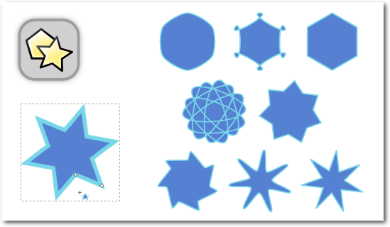

Zur Version ohne Bilder
Dies ist der zweite Teil des Inkscape-Workshops für Einsteiger. Wer sich unter den Begriffen „Vektorgrafik“, „SVG“, „Open Source“, „Pfad“ und „Community“ noch nichts vorstellen kann, schaut sich besser zunächst Teil I des Workshops (freiesMagazin 04/2016) an, um etwas über die Grundprinzipien von Vektorgrafiken zu erfahren. Im zweiten Teil taucht man mehr in die Praxis ein. (weiterlesen)
Kirche und Linux? Passt das zusammen, wenn man von eventuellen Meinungsverschiedenheiten des „richtigen“ Glaubens absieht? Ulrich Berens, 1. Vorsitzende des LUKi e. V. (Linux User im Bereich der Kirchen) verrät, wie und ob das klappt. (weiterlesen)
Zum Inhaltsverzeichnis
Die Neuerungen von Ubuntu 16.04 „Xenial Xerus“
Der April im Kernelrückblick
Anleitungen
Inkscape für Einsteiger – Teil II: Praxis
Community
Interview mit Ulrich Berens von LUKi e. V.
Rezension: Effektives modernes C++
Rezension: Two Scoops of Django
Rezension: Das ZEN von Pandoc
Magazin
Editorial
freiesMagazin-XML-API Dokumentation
Leserbriefe
Veranstaltungen
Vorschau
Konventionen
Impressum
Zum Inhaltsverzeichnis
[1] http://www.freiesmagazin.de/freiesMagazin-2016-04/
[2] https://github.com/
[3] https://sourceforge.net/
[4] https://gitlab.com/
[5] https://savannah.gnu.org/
[6] http://www.fsf.org/news/gnu-releases-ethical-evaluations-of-code-hosting-services
[7] https://www.gnu.org/software/repo-criteria.en.html
Beitrag teilen Beitrag kommentieren
Zum Inhaltsverzeichnis
GNOME Software unter Unity
Als weitere Neuerungen sollen das Dateisystem ZFS [3] und das neue Paketformat „Snap“ [4] unterstützt werden, welches es erlaubt, dass Pakete ihre eigenen Abhängigkeiten mitbringen.
Per dconf geänderte Position des Launchers
Der Launcher lässt sich jetzt auch am unteren Bildschirmrand positionieren – standardmäßig ist dieser am linken Bildschirmrand positioniert, was bei Breitbild-Monitoren durchaus sinnvoll ist.
KDE-Desktop mit geöffnetem Datei-Manager Dolphin und Menü
Als GUI für die Paketverwaltung kommt das in „Entdecken“ umbenannte Muon Discovery zum Einsatz.
[1] https://wiki.ubuntuusers.de/Xenial_Xerus/
[2] https://wiki.ubuntu.com/XenialXerus/ReleaseNotes
[3] http://www.pro-linux.de/news/1/23271/news.html
[4] http://www.pro-linux.de/news/1/23462/snap-als-neues-paketformat-in-ubuntu-1604-lts-xenial-xerus.html
[5] https://ikhaya.ubuntuusers.de/2015/12/10/ubuntu-16-04-mit-ausgeschalteter-online-dash-suche/
[6] http://ubuntubsd.org/
[7] http://www.pro-linux.de/news/1/23380/edubuntu-wird-nicht-mit-ubuntu-1604-veroeffentlicht.html
Beitrag teilen Beitrag kommentieren
Zum Inhaltsverzeichnis
[1] https://lkml.org/lkml/2016/4/3/148
[2] https://lwn.net/Articles/683327/
[3] https://de.wikipedia.org/wiki/OLPC_XO-1
[4] http://www.freiesmagazin.de/freiesMagazin-2015-12
[5] https://lkml.org/lkml/2016/4/17/329
[6] https://de.wikipedia.org/wiki/Motorola-68000er-Familie
[7] https://lkml.org/lkml/2016/4/24/177
Beitrag teilen Beitrag kommentieren
Zum Inhaltsverzeichnis
Der Aufbau des Inkscape-Fensters.
Ganz oben im Fenster befinden sich die Menüs, über die man eine große Menge an Funktionen und Dialogen aufrufen kann. Die Grundfunktionen in Inkscape sind leicht zu merken und zu benutzen, und am Anfang wird man auf die meisten Extra-Funktionen, die in den Menüs aufgeführt sind, gut verzichten können. Andererseits ist es gut, zumindest zu wissen, dass es sie gibt, falls man sie doch einmal benötigen sollte. -> Übung: Um einen groben Eindruck davon zu bekommen, was für Möglichkeiten Inkscape einem bietet, kann man sich jetzt in Ruhe einmal die Menüs durchlesen. Dabei darf man sich nicht von der schieren Menge verwirren lassen, denn es geht ja nur um eine erste Orientierung. Unterhalb des Menüs befindet sich die Befehlsleiste. Von hier aus lassen sich alle wichtigen Dialoge – z. B. der zum Speichern, der für Texteigenschaften oder der für das Verändern von Füllung und Kontur – erreichen. Außerdem befinden sich hier die Schaltflächen zum Rückgängig-Machen und Gruppieren. -> Übung: Beim Darüberfahren mit der Maus zeigt Inkscape über jeder Schaltfläche Tooltips an. Um zu erfahren, was die jeweilige Funktion ist, sollte man sich jetzt einmal alle Tooltips in der Befehlsleiste ansehen. Unterhalb der Befehlsleiste wiederum liegt die Leiste für die Werkzeugeinstellungen. Diese verändert sich, je nachdem, welches Werkzeug gerade aktiviert ist. Auch hier gibt es überall Tooltips beim Daraufzeigen mit der Maus. -> Übung: Jetzt ist der beste Zeitpunkt, dies einmal auszuprobieren! Links im Fenster liegt die Werkzeugleiste. Dort kann man auswählen, ob man z. B. ein Rechteck, einen Kreis oder doch lieber einen Pfad zeichnen möchte. -> Übung: Nun sollten die Tooltips der Werkzeugleiste genau angeschaut werden.
Die Statusleiste zeigt u. a. an, was für ein Objekttyp ausgewählt ist.
Ganz am unteren Fensterrand ist die Statusleiste. Hier werden verschiedene Informationen angezeigt, die im Moment wichtig sein könnten. Zum Beispiel kann man hier sehen, in welcher Ebene man sich gerade befindet, an welcher Position der Mauszeiger gerade ist oder welche Füll- und Konturfarbe ein ausgewähltes Objekt hat. Vor allem bekommt man immer Hinweise zum gerade ausgewählten Objekttyp, der Anzahl gewählter Objekte, oder zur Verwendung des aktiven Werkzeugs. Auch wenn etwas nicht so funktioniert wie erwartet, sollte man immer zuerst in die Statusleiste schauen. Oftmals gibt sie wertvolle Hinweise, die helfen können, die Ursache zu finden. Oberhalb der Statusleiste befindet sich die Farbpalette. Mit einem Klick auf ein Farbfeld in der Palette kann man die Füllfarbe des gewählten Objektes ändern.
Die Einrastfunktion ist aktiviert. In der abgebildeten Einstellung rasten ausschließlich Führungslinien am Gitter ein.
Ganz rechts im Fenster liegt die Leiste für die Einrasteinstellungen. Am Anfang werden viele diese noch nicht benötigen – das Einrasten stört vielleicht sogar eher, weil man damit Objekte nicht ganz frei verschieben kann. Sie springen dann nämlich oft zur nächstmöglichen Einraststelle. -> Übung: Falls der oberste Knopf in der Einrastleiste heruntergedrückt ist, kann man jetzt einmal darauf klicken, um das Einrasten abzuschalten. Danach kann man einmal mit der Maus die einzelnen Knöpfe abfahren und sich anschauen, was die Tooltips sagen.
Minimierte Dialoge erscheinen als Symbole im Dock.
Links neben der Einrastleiste ist der Bereich, in dem sich Dialoge andocken lassen. Falls ein Dialog mal nicht aufgeht, sieht man am besten zuerst hier nach. Es könnte sein, dass er mit einem Klick auf das kleine Dreieck ganz oben im Dialog minimiert wurde und in der Dockleiste nun nur noch als kleines Icon zu sehen ist. In der Mitte des Bildschirms liegt die Zeichenfläche. Dort kann man sich kreativ austoben und die meisten Dinge mit der Maus erledigen. Rechts und unterhalb der Zeichenfläche liegen noch die Scrollleisten, mit denen man schnell hin- und herscrollen kann. Oben und links an der Zeichenfläche sind die Seitenlineale, an denen man ganz grob Abstände peilen kann, und die zum Erzeugen von Hilfslinien benutzt werden können. -> Übung: Jetzt kann man einmal auf eines der Lineale klicken und dann die Maus mit gedrückter linker Maustaste in Richtung Zeichenfläche ziehen. Als Ergebnis erhält man seine allererste Hilfslinie – wenn man sie wieder loswerden will, braucht man sie einfach nur auf das Lineal zurückzuziehen.
Das Auswahlwerkzeug: links im Skaliermodus, rechts im Rotationsmodus.
Außerdem kann man Objekte damit:
Durch Ziehen an einem Knoten lässt sich dieser verschieben.
Dazu wählt man mit dem Knotenwerkzeug zunächst den Pfad, den man bearbeiten möchte, mit einem Klick aus. Danach kann man mit der Maus an den Knoten (dargestellt durch kleine Rauten, Quadrate oder Kreise) ziehen, um diese zu verschieben. Durch Ziehen mit der Maus an einer Verbindungslinie (einem Pfadsegment) zwischen zwei Knoten lässt sich diese direkt verformen. Stattdessen kann man auch an den beiden kreisförmigen Anfassern eines Knotens ziehen, um hierdurch das Pfadsegment zu verformen (diese sind bei ganz geraden Pfadsegmenten zunächst nicht sichtbar. Um sie „hervorzuzaubern“ kann man z. B. einfach kurz am Pfadsegment ziehen.). Jeder Knoten hat einen bestimmten Knotentyp: spitz, glatt, symmetrisch oder automatisch abgerundet. Dieser lässt sich nach einem Klick auf den Knoten in der Werkzeugleiste anpassen. -> Übung: Die drei Rechtecke sollen mit dem Knotenwerkzeug so bearbeitet werden, dass sie in die gestrichelten Formen passen. Beim ersten Rechteck muss dazu der untere rechte Knoten verschoben werden. Beim zweiten müssen das rechte und das linke Pfadsegment verformt werden. Am letzten der drei Rechtecke kann die Änderung des Knotentyps ausprobiert werden. Für eine automatische Abrundung aller vier Ecken wählt man z. B. alle Knoten aus, indem man mit der Maus ein Auswahlrechteck darüber zieht und klickt danach auf die Schaltfläche „Die gewählten Knoten automatisch abrunden“ in der Werkzeugleiste oben.
Wenn die Strg-Taste gedrückt wird, entsteht ein Quadrat. Die runden Anfasser erlauben es, die Ecken abzurunden.
Wenn man ein Quadrat zeichnen möchte, muss man dazu beim Ziehen „Strg“ gedrückt halten. Weitere, ganzzahlige Seitenverhältnisse erhält man, wenn man „Strg“ hält und einfach weiter zieht. Um die Ecken abzurunden, zieht man am kleinen Kreis in der oberen rechten Ecke des Rechtecks. Es erscheint darunter noch ein weiterer kreisförmiger Anfasser. Wenn man an dem zieht, wird die Ecke ungleichmäßig abgerundet. Mit den quadratischen Anfassern lässt sich die Größe ändern. -> Übung: Die drei gestrichelten Rechtecke sollen mit selbst erstellten Rechtecken gefüllt werden. Dabei sollte man auch immer mal wieder einen Blick auf die Statusleiste werfen, denn dort wird unter anderem auch das Seitenverhältnis angezeigt.
Ein echter Kreis (oben) entsteht mit gedrückter Strg-Taste. Für Kreissegmente zieht man den runden Anfasser und hält dabei die Maus außerhalb des Kreises (links unten), für Kreisbögen innerhalb (rechts unten).
Es funktioniert dabei so ähnlich wie das Rechteckwerkzeug:
Mit den Anfassern und den Optionen in der Werkzeugleiste für das Sternwerkzeug lassen sich interessante Formen erzeugen.
Oben in der Werkzeugleiste kann man wählen, ob man einen Stern oder ein regelmäßiges Vieleck zeichnen möchte. Mit diesen Schaltflächen lassen sich auch Sterne in Vielecke und wieder zurück verwandeln. Die Zahl der Ecken bzw. Spitzen lässt sich auch dort einstellen. Auf der Zeichenfläche kann man mit Klicken und Ziehen einen neuen Stern beziehungsweise ein neues Polygon erstellen. Mit den Anfassern kann man bei Sternen die Länge der Spitzen und den Abstand der Kerben zum Mittelpunkt des Sterns einstellen, beim Polygon die Ausrichtung und die Größe. -> Übung: Jetzt ist es Zeit, ein bisschen Spaß zu haben. Als weiteres Ziel sollen die ersten zwei – vielleicht sogar alle drei? – Formen mit dem entsprechenden Stern/Polygon gefüllt werden.
Das aktuelle Liniensegment wird beim Zeichnen rot dargestellt. Oben: normaler Modus, links: Spiralpfad, unten: Horizontal-/Vertikal-Modus.
Möchte man nur senkrechte oder waagerechte Linien zeichnen, so kann man den entsprechenden Modus oben in der Werkzeugleiste auswählen. Wenn man statt zweier einzelner Klicks die Maus gedrückt hält und zieht und erst dann klickt (nicht im waagerecht/senkrecht-Modus, sondern im ersten, normalen Modus), kann man direkt gebogene Linien zeichnen. Dieses Verhalten ist etwas schwierig zu kontrollieren, trotzdem sollte man es zumindest einmal ausprobiert haben. Der zweite Knopf in der Werkzeugleiste erstellt Spiralpfade. Alle erzeugten Pfade lassen sich nach dem Abschluss des Pfades mit einem Rechtsklick beliebig mit dem Knotenwerkzeug bearbeiten. -> Übung: Mit dem Knotenwerkzeug sollen nun die vier vorgezeichneten Pfade nachgezeichnet werden. Dabei sollte man immer den aktuell gewählten Werkzeugmodus (normal, Spiralpfade, nur senkrecht/waagerecht) beachten – und natürlich, wie immer, auch die Statusleiste. Auswahl-, Bézier- und Knotenwerkzeug zusammen sind wohl die drei wichtigsten Werkzeuge, wenn man eine „richtige“ Zeichnung machen möchte. Daher sollte man sich unbedingt auch die Tastaturkürzel für diese Werkzeuge merken: „S“, „B“ und „N“ (oder die Kürzel, die in den Tooltips angegeben sind – die funktionieren auch, sie sind allerdings nicht so leicht zu erreichen).
Der Baum links wurde mit hohem Glättungswert, der rechts mit geringem mit der Maus gezeichnet. Die Glättung wird erst nach Abschluss der Linie angewendet.
-> Übung: Das Malwerkzeug kann jetzt einfach frei ausprobiert werden. Dabei kann man mit dem Glättungswert spielen, um zu sehen, was dieser bewirkt.
Normaler Text lässt sich mit einem Klick erzeugen, Fließtext durch Aufziehen eines Kästchens.
Einfache Texte erstellt man, indem man auf die Zeichenfläche klickt und dann den Text tippt. Diese Texte können von jedem Browser angezeigt werden. Fließtext lässt sich erzeugen, indem man mit dem Textwerkzeug klickt und zieht. Ein Fließtext lässt sich (im Moment, Version 0.91 und SVG 1.1) nur in Inkscape anzeigen. Möchte man ihn auch in einem anderen Programm verwenden (z. B. in einer Webseite mit dem Browser anzeigen) so muss er zunächst in normalen Text umgewandelt werden. Die entsprechende Option findet sich im Text-Menü. Schriftart und Schriftgröße lassen sich oben in der Werkzeugleiste einstellen (in Version 0.91 funktioniert dies aufgrund eines Programmfehlers erst zuverlässig, nachdem man schon etwas Text geschrieben hat). -> Übung: Ein kurzer Text soll in der Workshopdatei geschrieben werden. Auch Fließtext sollte ausprobiert und probeweise in normalen Text umgewandelt werden. Wer mag, kann auch einmal ausprobieren, wie sich Fließtext beim Export in das PDF-Format und beim Ansehen mit einem Webbrowser verhält.
Der Dialog für Füllung und Kontur erlaubt die Feineinstellung der Farben, Muster, Verläufe und Konturstile von Objekten.
-> Übung: Der Kreis soll umgefärbt werden – und zwar innen blau und außen orange. Wenn man eine Farbe genauer einstellen oder den Stil der Kontur verändern möchte (Breite, gestrichelte oder einfache Linien), gibt es hierfür den „Füllung und Kontur“-Dialog. Um diesen zu öffnen gibt es eine Vielzahl an Möglichkeiten: Man kann z. B. ganz unten links auf eines der beiden Farbfelder hinter „Füllung“ oder „Kontur“ doppelklicken, in der Befehlsleiste auf die Schaltfläche mit dem Pinsel klicken, im Menü „Objekt -> Füllung und Kontur“ auswählen, oder die Tastaturkombination „Strg“ + „Umschalt“ + „F“ drücken. -> Übung: Der „Füllung und Kontur“-Dialog soll geöffnet werden. Er ist ausgegraut, wenn kein einfärbbares Objekt ausgewählt ist. Jetzt sollte man sich ganz in Ruhe die drei Reiter des Dialoges anschauen. Der erste ist für die Farbe/Art der Füllung, der zweite für die Farbe/Art der Kontur, der dritte für den Konturstil. Die Tooltips geben wertvolle Informationen. -> Übung: Die Füllfarbe des Kreises soll eingestellt werden. Dafür kann man sich die verschiedenen Farbregler ansehen und sich den aussuchen, mit dem man am besten zurechtkommt. Die Konturfarbe des Kreises kann nun ebenfalls verändert werden. Die Konturdicke und der Konturstil sollen auch noch geändert werden. Vielleicht sieht er ja mit gestrichelter Kontur viel besser aus?
Das linke Objekt ist ein Rechteck mit den entsprechenden Anfassern, rechts wurde es in einen Pfad umgewandelt.
In diesem Fall muss man das Objekt zuerst in einen Pfad umwandeln („Strg“ + „Umschalt“ + „C“). Das bedeutet, dass man es danach nicht mehr „objekttypisch“ bearbeiten kann, also z. B. kann man danach die Ecken eines Rechtecks nicht mehr einfach so abrunden, und in einem Text kann man auch nicht mehr schreiben. Dafür kann man das Objekt nun mit dem Knotenwerkzeug bearbeiten, und so zum Beispiel alle Löcher aus den Buchstaben „O“ in einem Text entfernen – oder eben eine bestimmte Erweiterung oder andere Funktionalität verwenden, die gerne einen Pfad haben möchte, weil sie sonst nicht funktioniert. -> Übung: Ein Rechteck und ein Text sollen erstellt werden. Zunächst sollen diese mit dem Knotenwerkzeug ausgewählt werden, wobei man auf die Form und Funktion der verfügbaren Anfasser achten sollte – und auch auf die Statusleiste. Danach sollen die beiden Objekte mit „Pfad -> Objekt zu Pfad“ in Pfade umgewandelt werden. Nach der Umwandlung kann man die beiden Objekte nun erneut mit dem Knotenwerkzeug auswählen, untersuchen und vergleichen, was die Statusleiste nun zu den Objekten zu sagen hat.
Links der Pinguin als Gruppe, in der Mitte sind alle Gruppen und Untergruppen aufgelöst worden, so dass die einzelnen Objekte erkennbar werden. Das rechte Beispiel zeigt, wie man eine Zeichnung mit Gruppen organisieren kann.
Dies kann man nutzen, um seine Zeichnung zu ordnen, oder auch, um die Lagebeziehung zwischen Objekten zu fixieren. Bei einem Gesicht könnte man z. B. nicht mehr versehentlich den Mund aus dem Gesicht heraus verschieben, wenn beide gruppiert sind, aber immer noch den gesamten Kopf verschieben oder drehen. Auch wenn man anfängt, mit Transparenzen zu spielen, werden Gruppen richtig wichtig. -> Übung: Die rechte Rechteckgruppe soll ausgewählt werden, dabei die Nachricht in der Statusleiste beachten! Jetzt soll die Gruppierung aufgelöst werden. Nachdem man ausprobiert hat, was jetzt anders ist, kann man die Rechtecke selbst wieder gruppieren. Was passiert, wenn man auf eine Gruppe doppelklickt? (Ausklappmenü in der Statusleiste beachten!) Eine Gruppe kann man auch wieder verlassen, indem man auf ein Objekt außerhalb der Gruppe klickt oder auf eine leere Stelle im Dokument doppelklickt. Mit „Strg“ + Klick kann ein Objekt immer ausgewählt werden, unabhängig davon, ob es gruppiert ist oder nicht.
Der rote Kreis wird schrittweise nach unten abgesenkt. Rechts wurde die dritte Figur etwas auseinandergezogen.
Eigentlich ist das auch ganz einfach: Man wählt ein Objekt aus und drückt dann auf „Bild auf“ oder „Bild ab“ oder man verwendet dafür die Stapel-Icons in der Werkzeugleiste des Auswahlwerkzeugs. -> Übung: Um die Funktion kennenzulernen, können die Rechtecke im entsprechenden Abschnitt der Workshopdatei genutzt werden.
Der Dialog „Ausrichten und Verteilen“ ermöglicht es, Objekte aneinander auszurichten.
-> Übung: Der Dialog soll nun geöffnet werden und die Tooltips der Schaltflächen gelesen werden. Besondere Beachtung verdient das Ausklappmenü oben. Dieses gibt an, welches Objekt an derselben Stelle bleiben soll wie zuvor, während alle anderen ausgewählten Objekte daran ausgerichtet werden. Nun soll versucht werden, aus den verstreuten blauen Kästchen das Ausrufezeichen zu bauen (Tipp: vertikal zentrieren! Mehrere Objekte auswählen: „Umschalt“ + Klick oder per Lassoauswahl).
Kombinieren: Kreis und Rechteck (links) werden zu einem Pfad mit zwei Unterpfaden kombiniert (rechts).
Vereinigung: Kreis und Rechteck (links) werden zu einem einzigen, zusammenhängenden Pfad vereinigt (rechts).
Differenz: Der oben liegende Kreis wird aus dem Rechteck ausgeschnitten.
Überschneidung: Der Bereich, in dem sich die beiden Objekte überschneiden, bleibt übrig.
Von oben nach unten: Exklusiv-Oder, Division, Pfad zerschneiden, Pfad zerlegen (bei den letzten drei wurden die zwei Objekte, die jeweils entstehen, zur besseren Darstellung etwas auseinandergeschoben).
[1] http://www.freiesmagazin.de/freiesMagazin-2016-04
[2] http://vektorrascheln.de/files/Inkscape_Einsteiger_Teil_II/2_-_Praxis_-_Grundlagen.svg
[3] https://de.wikipedia.org/wiki/Bézierkurve
[4] https://inkscape.org/de/
[5] https://inkscape.org/de/lernen/haufig-gestellte-fragen/
[6] https://inkscape.org/en/doc/keys091.de.html
[7] https://inkscape.org/de/lernen/bucher/
[8] https://inkscape.org/de/news/
[9] https://inkscape.org/de/community/
[10] https://inkscape.org/de/community/chat/
[11] https://inkscape.org/community/mailing-lists/
[12] https://inkscape.org/de/lernen/tutorials/
Beitrag teilen Beitrag kommentieren
Zum Inhaltsverzeichnis
[1] https://luki.org/
[2] https://fsfe.org/
[3] http://offene-bibel.de/
[4] https://openlp-wiki.luki.org/
[5] http://blog.eracc.com/2010/12/08/linux-tux-goes-to-church/
[6] https://luki.org/2010/12/linux-tux-geht-in-die-kirche/
[7] https://de.wikipedia.org/wiki/Klaus_Knopper
[8] http://www.futur2.org/article/fair-gehandelte-bananen-und-freie-software-ein-imperativ-fuer-christen/
[9] https://churchy.de/
[10] http://friendica.com/
Beitrag teilen Beitrag kommentieren
Zum Inhaltsverzeichnis
Links
[1] http://www.oreilly.de/catalog/effectivemodcplusger/
Beitrag teilen Beitrag kommentieren
Zum Inhaltsverzeichnis
Links
[1] https://www.djangoproject.com/
[2] https://www.twoscoopspress.com/products/two-scoops-of-django-1-8
Beitrag teilen Beitrag kommentieren
Zum Inhaltsverzeichnis
Links
[1] http://literatur.hasecke.com/sachbuecher/das-zen-von-pandoc
[2] http://pandoc.org/
[3] https://de.wikipedia.org/wiki/Markdown
[4] http://www.gnu.org/software/make/
[5] http://www.latex-project.org/
Beitrag teilen Beitrag kommentieren
Zum Inhaltsverzeichnis
[1] http://www.freiesmagazin.de/freiesmagazin.xml
[2] https://de.wikipedia.org/wiki/XML_Schema
[3] http://www.freiesmagazin.de/freiesmagazinapi.xsd
[4] http://www.freiesmagazin.de/freiesMagazin-2011-04-02
Beitrag teilen Beitrag kommentieren
Zum Inhaltsverzeichnis
 zur Verfügung - wir freuen uns über Lob,
Kritik und Anregungen zum Magazin.
An dieser Stelle möchten wir alle Leser ausdrücklich ermuntern,
uns auch zu schreiben, was nicht so gut gefällt. Wir bekommen
sehr viel Lob (was uns natürlich freut), aber vor allem durch
Kritik und neue Ideen können wir uns verbessern.
zur Verfügung - wir freuen uns über Lob,
Kritik und Anregungen zum Magazin.
An dieser Stelle möchten wir alle Leser ausdrücklich ermuntern,
uns auch zu schreiben, was nicht so gut gefällt. Wir bekommen
sehr viel Lob (was uns natürlich freut), aber vor allem durch
Kritik und neue Ideen können wir uns verbessern.
Arndt
Gast (Kommentar) <- Das Skript kann von der Webseite von freiesMagazin [2] heruntergeladen werden, allerdings ist noch etwas drum herum nötig. Z. B. die Datei, in der der Name und die MAC-Adresse der VM erwartet werden. Ferner müssen die im Artikel beschriebenen Annahmen - wir User-Name = Group-Name = Name des Homeverzeichnisses = Name der VM und der Name des Startskripts ist mit start-VMName.sh vorgegeben. Ansonsten müssen Sie das Skript reichlich anpassen.
Rolf Schmidt
Robert (Kommentar) <- Der Meinung war ich auch. Der Autor des Textes hat mir aber versichert, dass VirtualBox das doch irgendwie kann. Laut Anleitung geht das tatsächlich [3]. Man benötigt aber eine 64-Bit CPU und aktivierte Hardware-Virtualisierung.
Dominik Wagenführ
Jakob Moser (Kommentar) Links
[1] http://www.freiesmagazin.de/freiesMagazin-2016-04
[2] http://www.freiesmagazin.de/system/files/wol-server.tgz
[3] https://www.virtualbox.org/manual/ch03.html#intro-64bitguests
[4] https://wiki.archlinux.org/index.php/AUR_helpers
[5] https://github.com/rmarquis/pacaur
[6] https://bbs.archlinux.org/viewtopic.php?pid=937423
[7] http://www.pro-linux.de/artikel/2/1823/comm/591291/back.html?cop=200
Die Redaktion behält sich vor, Leserbriefe gegebenenfalls zu kürzen. Redaktionelle Ergänzungen finden sich in eckigen Klammern. Beitrag teilen Beitrag kommentieren
Zum Inhaltsverzeichnis
(Alle Angaben ohne Gewähr!)
Sie kennen eine Linux-Messe, welche noch nicht auf der Liste zu
finden ist? Dann schreiben Sie eine E-Mail mit den Informationen zu
Datum und Ort an .
Zum Inhaltsverzeichnis
Zum Inhaltsverzeichnis
Erscheinungsdatum: 1. Mai 2016
Dieses Magazin wurde mit LaTeX erstellt. Mit vollem Namen
gekennzeichnete Beiträge geben nicht notwendigerweise die Meinung
der Redaktion wieder. Wenn Sie freiesMagazin ausdrucken möchten, dann
denken Sie bitte an die Umwelt und drucken Sie nur im Notfall. Die
Bäume werden es Ihnen danken. ;-)
Soweit nicht anders angegeben, stehen alle Artikel, Beiträge und Bilder in freiesMagazin unter der Creative-Commons-Lizenz CC-BY-SA 4.0 International. Das Copyright liegt beim jeweiligen Autor. Die Kommentar- und Empfehlen-Icons wurden von Maren Hachmann erstellt und unterliegen ebenfalls der Creative-Commons-Lizenz CC-BY-SA 4.0 International. freiesMagazin unterliegt als Gesamtwerk der Creative-Commons-Lizenz CC-BY-SA 4.0 Unported mit Ausnahme der Inhalte, die unter einer anderen Lizenz hierin veröffentlicht werden. Das Copyright liegt bei Dominik Wagenführ. Es wird erlaubt, das Werk/die Werke unter den Bestimmungen der Creative-Commons-Lizenz zu kopieren, zu verteilen und/oder zu modifizieren. Die xkcd-Comics stehen separat unter der Creative-Commons-Lizenz CC-BY-NC 2.5 Generic. Das Copyright liegt bei Randall Munroe.
File translated from TEX by TTH, version 4.08.
On 26 May 2016, 10:13.
freiesMagazin Mai 2016
(ISSN 1867-7991)Themen dieser Ausgabe sind u. a.
Am 21. April wurde Ubuntu 16.04 „Xenial Xerus“ (übersetzt „gastfreundliches Kap-Borstenhörnchen“) veröffentlicht, die sechste Long-Term-Support-Version (kurz LTS) von Ubuntu mit fünf Jahren Support für das Grundsystem und die Benutzeroberfläche „Unity“, wobei die Derivate auch kürzere Support-Zeiträume haben können. Der Artikel erklärt die Änderungen der neuen Version. (weiterlesen)Dies ist der zweite Teil des Inkscape-Workshops für Einsteiger. Wer sich unter den Begriffen „Vektorgrafik“, „SVG“, „Open Source“, „Pfad“ und „Community“ noch nichts vorstellen kann, schaut sich besser zunächst Teil I des Workshops (freiesMagazin 04/2016) an, um etwas über die Grundprinzipien von Vektorgrafiken zu erfahren. Im zweiten Teil taucht man mehr in die Praxis ein. (weiterlesen)
Kirche und Linux? Passt das zusammen, wenn man von eventuellen Meinungsverschiedenheiten des „richtigen“ Glaubens absieht? Ulrich Berens, 1. Vorsitzende des LUKi e. V. (Linux User im Bereich der Kirchen) verrät, wie und ob das klappt. (weiterlesen)
Zum Inhaltsverzeichnis
Inhalt
Linux allgemeinDie Neuerungen von Ubuntu 16.04 „Xenial Xerus“
Der April im Kernelrückblick
Anleitungen
Inkscape für Einsteiger – Teil II: Praxis
Community
Interview mit Ulrich Berens von LUKi e. V.
Rezension: Effektives modernes C++
Rezension: Two Scoops of Django
Rezension: Das ZEN von Pandoc
Magazin
Editorial
freiesMagazin-XML-API Dokumentation
Leserbriefe
Veranstaltungen
Vorschau
Konventionen
Impressum
Zum Inhaltsverzeichnis
Editorial
XML-Schnittstelle
In dieser Ausgabe kann man wieder einmal wunderbar sehen, wie die Community nicht nur jeden Monat (mal mehr und mal weniger) fleißig Artikel für die anderen Leser liefert, sondern auch direkt auf freiesMagazin Einfluss nimmt. In einem Leserbrief in der April-Ausgabe [1] wurde nach einer besseren Artikelübersicht auf unserer Webseite gefragt. Ein Leser und Autor hat daraufhin in Zusammenarbeit mit Chefredakteur Dominik Wagenführ eine Dokumentation zur XML-Schnittstelle unserer Webseite erstellt und in dieser Ausgabe veröffentlicht. Dies ist sicherlich ein guter Schritt in Richtung einer besseren Artikelsuche und -übersicht, an den ja vielleicht ein anderer Leser aus der Community anknüpfen kann?Github und Sourceforge unethisch?
Die Free-Software-Foundation (FSF) und das GNU-Projekt haben die Code-Repositorys Github [2], Sourceforge [3], Gitlab [4] und das GNU-eigene Savannah [5] auf die Einhaltung bestimmter ethischer Standards untersucht [6]. Unter anderem geht es darum, inwieweit unfreie Software zur Benutzung des Repositorys notwendig ist, oder ob gegen bestimmte Nutzer diskriminiert wird. [7] Die Untersuchung vergab dabei Schulnoten, wobei wenig überraschend ist, dass GNU Savannah Klassenprimus ist. Gitlab ist mit einem „C“ immerhin akzeptabel genug, um ein GNU-Paket zu hosten. Sourceforge und Github dagegen erfüllen diese Standards nicht. Beide verwenden unfreies JavaScript für wichtige Funktionen oder, wie im Falle von Sourceforge, schließen bestimmte Nutzer von der Teilnahme aus, nämlich solche aus einem von den USA sanktionierten Land. Damit hat jeder ein weiteres Hilfsmittel zur Auswahl eines Online-Repositorys in der Hand, sofern andere Features nicht ausschlaggebender sind. Und nun wünschen wir Ihnen viel Spaß mit der neuen Ausgabe. Ihre freiesMagazin-Redaktion Links[1] http://www.freiesmagazin.de/freiesMagazin-2016-04/
[2] https://github.com/
[3] https://sourceforge.net/
[4] https://gitlab.com/
[5] https://savannah.gnu.org/
[6] http://www.fsf.org/news/gnu-releases-ethical-evaluations-of-code-hosting-services
[7] https://www.gnu.org/software/repo-criteria.en.html
Beitrag teilen Beitrag kommentieren
Zum Inhaltsverzeichnis
Die Neuerungen von Ubuntu 16.04 „Xenial Xerus“
von Julius Cordes Am 21. April wurde Ubuntu 16.04 „Xenial Xerus“ [1] (übersetzt „gastfreundliches Kap-Borstenhörnchen“) veröffentlicht, die sechste Long-Term-Support-Version (kurz LTS) von Ubuntu mit fünf Jahren Support für das Grundsystem und die Benutzeroberfläche „Unity“, wobei die Derivate auch kürzere Support-Zeiträume haben können.Änderungen am Unterbau
Ubuntu 16.04 ist die erste LTS-Version mit systemd als init-System [2], wovon der durchschnittliche Anwender allerdings nichts mitbekommen wird. Der verwendete Linux-Kernel ist 4.4, wobei einige Backports aus 4.5 im Grafik-Bereich enthalten sind, da der proprietäre fglrx-Treiber für AMD-Grafikkarten entfernt wurde und stattdessen auf die quelloffenen Treiber radeon und amgpu gesetzt werden soll. Die wohl auffälligste Änderung dürfte das nun mitgelieferte Programm GNOME Software in Version 3.20 sein, das das schon länger nicht mehr erweiterte Ubuntu Software Center ersetzt. Es arbeitet schneller und verwendet die gleichen Archiv-Metadaten wie Debian.GNOME Software unter Unity
Als weitere Neuerungen sollen das Dateisystem ZFS [3] und das neue Paketformat „Snap“ [4] unterstützt werden, welches es erlaubt, dass Pakete ihre eigenen Abhängigkeiten mitbringen.
Ubuntu
Weil Unity 8 weiter auf sich warten lässt – Canonical peilt derzeit Ubuntu 16.10 als Ziel an – kommt als Desktop weiter Unity 7 mit nur geringen Änderungen zum Einsatz. Neben der Integration von GNOME Software als Ersatz für das Software Center ist noch zu erwähnen, dass aus Gründen der langen Unterstützungsdauer der LTS einige Scopes (Sucherweiterungen für das Dash) nicht mehr mitinstalliert werden und auch die aus Datenschutzgründen umstrittene Online-Suche standardmäßig deaktiviert ist [5].Per dconf geänderte Position des Launchers
Der Launcher lässt sich jetzt auch am unteren Bildschirmrand positionieren – standardmäßig ist dieser am linken Bildschirmrand positioniert, was bei Breitbild-Monitoren durchaus sinnvoll ist.
Kubuntu
Kubuntu 16.04 ist nach 15.10 die zweite Kubuntu-Version, die auf Plasma 5 als Desktop setzt und bringt eine Mischung aus KDE4- und KDE5-Anwendungen mit.KDE-Desktop mit geöffnetem Datei-Manager Dolphin und Menü
Als GUI für die Paketverwaltung kommt das in „Entdecken“ umbenannte Muon Discovery zum Einsatz.
Xubuntu & Lubuntu
Die beiden Derivate mit den ressourcensparenden Desktops bringen gegenüber 15.10 nicht viel Neues. Lubuntu 16.04 dürfte allerdings die letzte Version mit dem auf auf GTK+ basierenden Desktop LXDE sein, ab 16.10 soll die Qt-basierte Neuentwicklung LXQt zum Einsatz kommen.Ubuntu MATE
Ubuntu MATE basiert auf MATE 1.12, welches hauptsächlich Detailverbesserungen mit sich bringt, unter anderem arbeitet das MATE-Projekt gerade am Umstieg von GTK2 auf GTK3. In Sachen Software-Verwaltung ist das hauseigene „Software Boutique“ vorinstalliert, das allerdings nur eine Software-Auswahl präsentiert, aber direkt auf der Startseite auch auf die anderen Software-Zentren wie GNOME Software und das Ubuntu Software Center verweist und diese zur Installation anbietet. Wie schon bei 15.10 wird von offizieller Seite ein Image für die Bastelrechner Raspberry Pi 2 und 3 angeboten.Weiteres
Ubuntu GNOME basiert auf GNOME 3.18 mit einigen Programmen aus der neueren Version 3.20 (unter anderem GNOME Software, das auch hier das alte Software Center ersetzt). UbuntuBSD [6], dessen Ziel es ist, Ubuntu mit einem FreeBSD-Kernel auszuliefern, feilt noch an der Veröffentlichung von 15.10. Edubuntu wird nicht zusammen mit 16.04 veröffentlicht, da sich die beiden Projektleiter des nach didaktischen Gesichtspunkten zusammengestellte Derivats nach zehn Jahren zurückziehen wollen und daher nach Nachfolgern suchen [7]. Die auf 14.04 basierende Version wird allerdings noch bis 2019 unterstützt.Fazit
Ubuntu 16.04 bringt keine wirklich revolutionären Änderungen für die Anwender, besonders wenig für Nutzer von Unity. Meist wurden nur die Softwarequellen auf den aktuellen Stand gebracht und kleinere Verbesserungen durchgeführt. Nur bei Kubuntu erwartet die Anwender, die von 14.04 auf die neue Version umsteigen, eine neue Hauptversion des Desktops. Wegen der aktualisierten Software und trotz der geringen Änderungen an Unity lohnt sich für die meisten Anwender ein zügiger Wechsel von der vorherigen LTS auf Ubuntu 16.04. Links[1] https://wiki.ubuntuusers.de/Xenial_Xerus/
[2] https://wiki.ubuntu.com/XenialXerus/ReleaseNotes
[3] http://www.pro-linux.de/news/1/23271/news.html
[4] http://www.pro-linux.de/news/1/23462/snap-als-neues-paketformat-in-ubuntu-1604-lts-xenial-xerus.html
[5] https://ikhaya.ubuntuusers.de/2015/12/10/ubuntu-16-04-mit-ausgeschalteter-online-dash-suche/
[6] http://ubuntubsd.org/
[7] http://www.pro-linux.de/news/1/23380/edubuntu-wird-nicht-mit-ubuntu-1604-veroeffentlicht.html
Autoreninformation |
| Julius Cordes (Webseite) nutzt Ubuntu seit 12.04 als Haupt-Betriebssystem und ist mit Unity als Desktop aktuell sehr zufrieden. |
Beitrag teilen Beitrag kommentieren
Zum Inhaltsverzeichnis
Der April im Kernelrückblick
von Mathias Menzer Basis aller Distributionen ist der Linux-Kernel, der fortwährend weiterentwickelt wird. Welche Geräte in einem halben Jahr unterstützt werden und welche Funktionen neu hinzukommen, erfährt man, wenn man den aktuellen Entwickler-Kernel im Auge behält.Linux 4.6 Entwicklung
Nach dem Start im März nahm die Entwicklung von Linux 4.6 nur langsam Fahrt auf. Die zweite Entwicklerversion [1] wies eine moderate Zahl an Änderungen auf. Davon entfielen die meisten auf die Treiber und architekturspezifischem Code sowie den Netzwerk-Bereich. Neuerungen kamen keine hinzu, es wurden in erster Linie Korrekturen und kleinere Optimierungen eingebracht. Mit Linux 4.6-rc3 [2] war das dann erst einmal vorbei. Er fiel etwas größer aus und brachte dann auch interessante Änderungen mit. Erinnert sich noch jemand an OLPC (One Laptop Per Child) [3]? Im Dezember wurde der Treiber für den Display Controller des XO-1 entfernt, und nun wieder aufgenommen, nachdem sich herausgestellt hat, dass diese Geräte noch im Umlauf sind. Handelte es sich hierbei um eine eher unscheinbare Änderung, fallen jene im Umfeld der Dateisysteme etwas umfangreicher aus. Einige Korrekturen konnte das neue OrangeFS für sich verbuchen und hier wurde auf die neue Funktion strscpy() umgestellt (siehe „Der November im Kernelrückblick“, freiesMagazin 12/2015 [4]). Stärker ins Gewicht fallen hier jedoch die Arbeiten an btrfs. Diese umfassen neben den üblichen Korrekturen auch Verbesserungen der Werkzeuge für die Fehlersuche und Rechtschreibkorrekturen in den Kommentaren. Das Entfernen eines Makros, das von allen Dateisystemen genutzt wird, trug sein Übriges dazu bei, dass der Filesystem-Zweig diesmal besonders stark von Änderungen betroffen war. Die Woche zwischen -rc3 und -rc4 [5] verlief ziemlich ruhig und entsprechend kamen auch nicht viele Änderungen zusammen. Die Standardkonfiguration der 68000er Architektur [6] erfuhr einige Aktualisierungen in Bezug auf neue Treiber oder das Dateisystem OrangeFS. Und am Treiber für Wacoms Zeichen-Tablets soll eine Korrektur nun erkennen, ob das Gerät vielleicht unter einem anderen Betriebssystem in einen anderen Arbeitsmodus versetzt wurde. Die fünfte Entwicklerversion [7] fiel wieder etwas größer aus, kam also wieder auf über 200 Änderungen. Torvalds merkte in der Veröffentlichungs-Mail auch an, dass der aktuelle Entwicklungszyklus sehr ruhig verläuft. Unter den gefundenen Fehlern finden sich keine beängstigenden Dinge, die ein final Release verhindern würden. Unter den wenigen Neuerungen findet sich ein Test, mit dem überprüft werden kann, ob eingehende Netzwerkpakete beim richtigen Stack, also IPv4 oder IPv6, landen. Weitere Korrekturen betreffen zu einem guten Teil ebenfalls den Netzwerk-Bereich, wo Fehler in der Behandlung von UDP-Paketen unter dem neuen Internetprotokoll IPv6 beseitigt wurden. Links[1] https://lkml.org/lkml/2016/4/3/148
[2] https://lwn.net/Articles/683327/
[3] https://de.wikipedia.org/wiki/OLPC_XO-1
[4] http://www.freiesmagazin.de/freiesMagazin-2015-12
[5] https://lkml.org/lkml/2016/4/17/329
[6] https://de.wikipedia.org/wiki/Motorola-68000er-Familie
[7] https://lkml.org/lkml/2016/4/24/177
Autoreninformation |
| Mathias Menzer (Webseite) behält die Entwicklung des Linux-Kernels im Blick, um über kommende Funktionen von Linux auf dem Laufenden zu bleiben und immer mit interessanten Abkürzungen und komplizierten Begriffen dienen zu können. |
Beitrag teilen Beitrag kommentieren
Zum Inhaltsverzeichnis
Inkscape für Einsteiger – Teil II: Praxis
von Maren Hachmann Dies ist der zweite Teil des Inkscape-Workshops für Einsteiger. Wer sich unter den Begriffen „Vektorgrafik“, „SVG“, „Open Source“, „Pfad“ und „Community“ noch nichts vorstellen kann, schaut sich besser zunächst Teil I des Workshops (freiesMagazin 04/2016 [1]) an, um etwas über die Grundprinzipien von Vektorgrafiken zu erfahren. Dieser Teil des Workshops ist zum Mitmachen konzipiert – daher sollte man sich zuerst die Workshopdatei [2] herunterladen und mit Inkscape öffnen. Hier im Artikel gibt es die Erklärungen, und in Inkscape kann man das Gelernte anhand der vorbereiteten Workshopdatei sofort ausprobieren. Diese Workshopanleitung lässt man daher beim Durcharbeiten des Workshops am besten geöffnet und wechselt dann zwischen den beiden Anwendungen hin- und her.![[2]](http://vektorrascheln.de/files/Inkscape_Einsteiger_Teil_II/2_-_Praxis_-_Grundlagen.svg){kind=link}
Das Inkscape-Fenster
In der Datei sieht man zuerst eine Grafik, die die unterschiedlichen Teile des Inkscape-Programmfensters benennt.Der Aufbau des Inkscape-Fensters.
Ganz oben im Fenster befinden sich die Menüs, über die man eine große Menge an Funktionen und Dialogen aufrufen kann. Die Grundfunktionen in Inkscape sind leicht zu merken und zu benutzen, und am Anfang wird man auf die meisten Extra-Funktionen, die in den Menüs aufgeführt sind, gut verzichten können. Andererseits ist es gut, zumindest zu wissen, dass es sie gibt, falls man sie doch einmal benötigen sollte. -> Übung: Um einen groben Eindruck davon zu bekommen, was für Möglichkeiten Inkscape einem bietet, kann man sich jetzt in Ruhe einmal die Menüs durchlesen. Dabei darf man sich nicht von der schieren Menge verwirren lassen, denn es geht ja nur um eine erste Orientierung. Unterhalb des Menüs befindet sich die Befehlsleiste. Von hier aus lassen sich alle wichtigen Dialoge – z. B. der zum Speichern, der für Texteigenschaften oder der für das Verändern von Füllung und Kontur – erreichen. Außerdem befinden sich hier die Schaltflächen zum Rückgängig-Machen und Gruppieren. -> Übung: Beim Darüberfahren mit der Maus zeigt Inkscape über jeder Schaltfläche Tooltips an. Um zu erfahren, was die jeweilige Funktion ist, sollte man sich jetzt einmal alle Tooltips in der Befehlsleiste ansehen. Unterhalb der Befehlsleiste wiederum liegt die Leiste für die Werkzeugeinstellungen. Diese verändert sich, je nachdem, welches Werkzeug gerade aktiviert ist. Auch hier gibt es überall Tooltips beim Daraufzeigen mit der Maus. -> Übung: Jetzt ist der beste Zeitpunkt, dies einmal auszuprobieren! Links im Fenster liegt die Werkzeugleiste. Dort kann man auswählen, ob man z. B. ein Rechteck, einen Kreis oder doch lieber einen Pfad zeichnen möchte. -> Übung: Nun sollten die Tooltips der Werkzeugleiste genau angeschaut werden.
Die Statusleiste zeigt u. a. an, was für ein Objekttyp ausgewählt ist.
Ganz am unteren Fensterrand ist die Statusleiste. Hier werden verschiedene Informationen angezeigt, die im Moment wichtig sein könnten. Zum Beispiel kann man hier sehen, in welcher Ebene man sich gerade befindet, an welcher Position der Mauszeiger gerade ist oder welche Füll- und Konturfarbe ein ausgewähltes Objekt hat. Vor allem bekommt man immer Hinweise zum gerade ausgewählten Objekttyp, der Anzahl gewählter Objekte, oder zur Verwendung des aktiven Werkzeugs. Auch wenn etwas nicht so funktioniert wie erwartet, sollte man immer zuerst in die Statusleiste schauen. Oftmals gibt sie wertvolle Hinweise, die helfen können, die Ursache zu finden. Oberhalb der Statusleiste befindet sich die Farbpalette. Mit einem Klick auf ein Farbfeld in der Palette kann man die Füllfarbe des gewählten Objektes ändern.
Die Einrastfunktion ist aktiviert. In der abgebildeten Einstellung rasten ausschließlich Führungslinien am Gitter ein.
Ganz rechts im Fenster liegt die Leiste für die Einrasteinstellungen. Am Anfang werden viele diese noch nicht benötigen – das Einrasten stört vielleicht sogar eher, weil man damit Objekte nicht ganz frei verschieben kann. Sie springen dann nämlich oft zur nächstmöglichen Einraststelle. -> Übung: Falls der oberste Knopf in der Einrastleiste heruntergedrückt ist, kann man jetzt einmal darauf klicken, um das Einrasten abzuschalten. Danach kann man einmal mit der Maus die einzelnen Knöpfe abfahren und sich anschauen, was die Tooltips sagen.
Minimierte Dialoge erscheinen als Symbole im Dock.
Links neben der Einrastleiste ist der Bereich, in dem sich Dialoge andocken lassen. Falls ein Dialog mal nicht aufgeht, sieht man am besten zuerst hier nach. Es könnte sein, dass er mit einem Klick auf das kleine Dreieck ganz oben im Dialog minimiert wurde und in der Dockleiste nun nur noch als kleines Icon zu sehen ist. In der Mitte des Bildschirms liegt die Zeichenfläche. Dort kann man sich kreativ austoben und die meisten Dinge mit der Maus erledigen. Rechts und unterhalb der Zeichenfläche liegen noch die Scrollleisten, mit denen man schnell hin- und herscrollen kann. Oben und links an der Zeichenfläche sind die Seitenlineale, an denen man ganz grob Abstände peilen kann, und die zum Erzeugen von Hilfslinien benutzt werden können. -> Übung: Jetzt kann man einmal auf eines der Lineale klicken und dann die Maus mit gedrückter linker Maustaste in Richtung Zeichenfläche ziehen. Als Ergebnis erhält man seine allererste Hilfslinie – wenn man sie wieder loswerden will, braucht man sie einfach nur auf das Lineal zurückzuziehen.
Sich im Dokument bewegen
Scrollen
Zum Verschieben der Zeichenfläche gibt es eine ganze Reihe von Möglichkeiten. Man kann dazu:- die Bildlaufleisten verwenden
- am Mausrad drehen (mit „Umschalt“ seitwärts)
- „Strg“ und die Pfeiltasten drücken
- „Leertaste“ festhalten und die Maus verschieben
Zoomen
Auch zum Einstellen der Vergrößerung gibt es wieder mehrere Wege:- „Strg“ gedrückt halten und am Mausrad drehen
- Das Zoomwerkzeug aus der Werkzeugleiste links verwenden (Die Statusleiste gibt auch hier wichtige Informationen! Auch ein Rechtsklick verkleinert.)
- Ganz rechts unten in der Ecke den Zoomfaktor direkt eingeben oder mit kleinen den Pfeilen verändern
- Die Ziffern im Ziffernblock zoomen auf festgelegte Werte. So zoomt z. B. die „5“ auf die Seite, die „4“ auf die gesamte Zeichnung und die „3“ auf das ausgewählte Objekt.
- Während man „Q“ gedrückt hält, wird der aktuelle Ausschnitt auf das Doppelte vergrößert oder, wenn ein Objekt ausgewählt ist, auf das Objekt gezoomt.
Die Werkzeuge
Nachdem gezeigt wurde, wie man sich in der Zeichnung bewegen kann, ist es nun endlich Zeit, die Werkzeuge auszuprobieren und Dinge in der Zeichnung zu verändern. Dafür wurde in der Datei alles so vorbereitet, dass die wichtigen Dinge (Text und Hintergrundbilder) nicht verändert werden können (sie sind gesperrt), aber schon einige Beispielobjekte vorhanden sind, mit denen herumprobiert werden kann. Es werden in diesem Einsteiger-Workshop längst nicht alle Werkzeuge vorgestellt – aber mit der angebotenen Auswahl lassen sich problemlos ansehnliche Zeichnungen machen. -> Übung: Mittels Scrollen und Zoomen sollte man jetzt zum Abschnitt „Auswahl-/Verschiebewerkzeug“ in der Workshopdatei zurückkehren. Auch im Folgenden sollte man weiter zwischen der Workshopdatei und diesem Artikel hin- und herwechseln, um das meiste aus diesem Tutorial herauszuholen. Ansonsten lernt man nur halb so viel (und es macht auch noch viel weniger Spaß…)! Nur durch Ausprobieren erfährt man, welche der Möglichkeiten für einen selbst nützlich sind, und es prägt sich auch alles viel besser ein.Das Auswahlwerkzeug
Durch Klicken mit dem Auswahlwerkzeug (Tastaturkürzel „S“) kann man Objekte auswählen. Weitere Objekte lassen sich mit „Umschalt“ und Klick zur Auswahl hinzufügen.Das Auswahlwerkzeug: links im Skaliermodus, rechts im Rotationsmodus.
Außerdem kann man Objekte damit:
- verschieben: mit der Maus fassen und ziehen
- in der Größe verändern: Objekt auswählen, dann an den pfeilförmigen Anfassern ziehen; „Strg“ festhalten, um dabei das Seitenverhältnis beizubehalten
- scheren: Objekt auswählen, noch ein weiteres Mal darauf klicken, dann an den horizontalen/ vertikalen pfeilförmigen Anfassern ziehen
- drehen: Objekt auswählen, noch ein weiteres Mal darauf klicken, dann an den Anfassern in den Ecken der Umrandungsbox ziehen (wenn man „Strg“ dabei festhält, wird schrittweise um voreingestellte 15° gedreht)
Das Knotenwerkzeug
Zum Bearbeiten von Pfaden verwendet man das Knotenwerkzeug („N“). Mit diesem lassen sich Knoten verschieben, löschen oder hinzufügen, und die Kurven, die die Knoten untereinander verbinden, verformen.Durch Ziehen an einem Knoten lässt sich dieser verschieben.
Dazu wählt man mit dem Knotenwerkzeug zunächst den Pfad, den man bearbeiten möchte, mit einem Klick aus. Danach kann man mit der Maus an den Knoten (dargestellt durch kleine Rauten, Quadrate oder Kreise) ziehen, um diese zu verschieben. Durch Ziehen mit der Maus an einer Verbindungslinie (einem Pfadsegment) zwischen zwei Knoten lässt sich diese direkt verformen. Stattdessen kann man auch an den beiden kreisförmigen Anfassern eines Knotens ziehen, um hierdurch das Pfadsegment zu verformen (diese sind bei ganz geraden Pfadsegmenten zunächst nicht sichtbar. Um sie „hervorzuzaubern“ kann man z. B. einfach kurz am Pfadsegment ziehen.). Jeder Knoten hat einen bestimmten Knotentyp: spitz, glatt, symmetrisch oder automatisch abgerundet. Dieser lässt sich nach einem Klick auf den Knoten in der Werkzeugleiste anpassen. -> Übung: Die drei Rechtecke sollen mit dem Knotenwerkzeug so bearbeitet werden, dass sie in die gestrichelten Formen passen. Beim ersten Rechteck muss dazu der untere rechte Knoten verschoben werden. Beim zweiten müssen das rechte und das linke Pfadsegment verformt werden. Am letzten der drei Rechtecke kann die Änderung des Knotentyps ausprobiert werden. Für eine automatische Abrundung aller vier Ecken wählt man z. B. alle Knoten aus, indem man mit der Maus ein Auswahlrechteck darüber zieht und klickt danach auf die Schaltfläche „Die gewählten Knoten automatisch abrunden“ in der Werkzeugleiste oben.
Das Rechteckwerkzeug
Mit dem Rechteckwerkzeug („R“) lassen sich Quadrate und Rechtecke, wahlweise mit abgerundeten Ecken, zeichnen. Klicken auf die Zeichenfläche und Ziehen mit dem Rechteckwerkzeug erzeugt ein Rechteck.Wenn die Strg-Taste gedrückt wird, entsteht ein Quadrat. Die runden Anfasser erlauben es, die Ecken abzurunden.
Wenn man ein Quadrat zeichnen möchte, muss man dazu beim Ziehen „Strg“ gedrückt halten. Weitere, ganzzahlige Seitenverhältnisse erhält man, wenn man „Strg“ hält und einfach weiter zieht. Um die Ecken abzurunden, zieht man am kleinen Kreis in der oberen rechten Ecke des Rechtecks. Es erscheint darunter noch ein weiterer kreisförmiger Anfasser. Wenn man an dem zieht, wird die Ecke ungleichmäßig abgerundet. Mit den quadratischen Anfassern lässt sich die Größe ändern. -> Übung: Die drei gestrichelten Rechtecke sollen mit selbst erstellten Rechtecken gefüllt werden. Dabei sollte man auch immer mal wieder einen Blick auf die Statusleiste werfen, denn dort wird unter anderem auch das Seitenverhältnis angezeigt.
Das Ellipsenwerkzeug
Das Ellipsenwerkzeug („E“) erzeugt Kreise, Ellipsen, Kreisbögen und Kreissegmente.Ein echter Kreis (oben) entsteht mit gedrückter Strg-Taste. Für Kreissegmente zieht man den runden Anfasser und hält dabei die Maus außerhalb des Kreises (links unten), für Kreisbögen innerhalb (rechts unten).
Es funktioniert dabei so ähnlich wie das Rechteckwerkzeug:
- Klicken und Ziehen erzeugt eine Ellipse.
- „Strg“ festhalten für Kreise und andere ganzzahlige Seitenverhältnisse
- Größenänderung mit den quadratischen Anfassern
- Um Kreissegmente und Kreisbögen zu erzeugen, zieht man an den runden Anfassern. Wenn man dabei die Maus innerhalb der Ellipse hält, erhält man Kreisbögen, Ziehen außerhalb der Ellipse erzeugt Kreissegmente.
Sterne und Polygone
Das Sternwerkzeug („*“ bzw.„Umschalt“ + „+“) macht wegen seiner Vielseitigkeit vor allem viel Spaß, erzeugt aber nebenbei auch noch Sterne und regelmäßige Vielecke. Mit den Anfassern und den Optionen in der Werkzeugleiste für das Sternwerkzeug lassen sich interessante Formen erzeugen.
Oben in der Werkzeugleiste kann man wählen, ob man einen Stern oder ein regelmäßiges Vieleck zeichnen möchte. Mit diesen Schaltflächen lassen sich auch Sterne in Vielecke und wieder zurück verwandeln. Die Zahl der Ecken bzw. Spitzen lässt sich auch dort einstellen. Auf der Zeichenfläche kann man mit Klicken und Ziehen einen neuen Stern beziehungsweise ein neues Polygon erstellen. Mit den Anfassern kann man bei Sternen die Länge der Spitzen und den Abstand der Kerben zum Mittelpunkt des Sterns einstellen, beim Polygon die Ausrichtung und die Größe. -> Übung: Jetzt ist es Zeit, ein bisschen Spaß zu haben. Als weiteres Ziel sollen die ersten zwei – vielleicht sogar alle drei? – Formen mit dem entsprechenden Stern/Polygon gefüllt werden.
Bézierkurven und Linien
Mit dem Zeichenwerkzeug Linien & Bézierkurven („B“) lassen sich exakt Pfade zeichnen (beliebige Formen – genau genommen bestehen diese aus Bézierkurven [3]). Wenn man damit auf die Zeichenfläche klickt, erzeugt man einen Knoten. Ein zweiter Klick erzeugt einen weiteren Knoten und eine gerade Linie dazwischen. Ein Rechtsklick beendet den Pfad. Wenn man wieder auf den Anfangsknoten klickt, schließt man den Pfad damit.Das aktuelle Liniensegment wird beim Zeichnen rot dargestellt. Oben: normaler Modus, links: Spiralpfad, unten: Horizontal-/Vertikal-Modus.
Möchte man nur senkrechte oder waagerechte Linien zeichnen, so kann man den entsprechenden Modus oben in der Werkzeugleiste auswählen. Wenn man statt zweier einzelner Klicks die Maus gedrückt hält und zieht und erst dann klickt (nicht im waagerecht/senkrecht-Modus, sondern im ersten, normalen Modus), kann man direkt gebogene Linien zeichnen. Dieses Verhalten ist etwas schwierig zu kontrollieren, trotzdem sollte man es zumindest einmal ausprobiert haben. Der zweite Knopf in der Werkzeugleiste erstellt Spiralpfade. Alle erzeugten Pfade lassen sich nach dem Abschluss des Pfades mit einem Rechtsklick beliebig mit dem Knotenwerkzeug bearbeiten. -> Übung: Mit dem Knotenwerkzeug sollen nun die vier vorgezeichneten Pfade nachgezeichnet werden. Dabei sollte man immer den aktuell gewählten Werkzeugmodus (normal, Spiralpfade, nur senkrecht/waagerecht) beachten – und natürlich, wie immer, auch die Statusleiste. Auswahl-, Bézier- und Knotenwerkzeug zusammen sind wohl die drei wichtigsten Werkzeuge, wenn man eine „richtige“ Zeichnung machen möchte. Daher sollte man sich unbedingt auch die Tastaturkürzel für diese Werkzeuge merken: „S“, „B“ und „N“ (oder die Kürzel, die in den Tooltips angegeben sind – die funktionieren auch, sie sind allerdings nicht so leicht zu erreichen).
Freihandlinien
Das Werkzeug zum Freihandlinien-Zeichnen („P“) zeichnet ebenfalls Pfade. Es lässt sich am besten mit einem Grafiktablett verwenden. Wenn man eine Maus benutzt, sollte man in der Werkzeugleiste die Glättung etwas höher setzen, damit die Zeichnung weniger „krakelig“ aussieht. Klicken und Ziehen zum Zeichnen – das ist schon alles.Der Baum links wurde mit hohem Glättungswert, der rechts mit geringem mit der Maus gezeichnet. Die Glättung wird erst nach Abschluss der Linie angewendet.
-> Übung: Das Malwerkzeug kann jetzt einfach frei ausprobiert werden. Dabei kann man mit dem Glättungswert spielen, um zu sehen, was dieser bewirkt.
Textwerkzeug
Mit dem Textwerkzeug („T“) kann man Texte schreiben, formatieren, ausrichten und auch einzelne Buchstaben verschieben. Dabei muss man etwas aufpassen, denn es kann zwei verschiedene Arten von Texten erzeugen:Normaler Text lässt sich mit einem Klick erzeugen, Fließtext durch Aufziehen eines Kästchens.
Einfache Texte erstellt man, indem man auf die Zeichenfläche klickt und dann den Text tippt. Diese Texte können von jedem Browser angezeigt werden. Fließtext lässt sich erzeugen, indem man mit dem Textwerkzeug klickt und zieht. Ein Fließtext lässt sich (im Moment, Version 0.91 und SVG 1.1) nur in Inkscape anzeigen. Möchte man ihn auch in einem anderen Programm verwenden (z. B. in einer Webseite mit dem Browser anzeigen) so muss er zunächst in normalen Text umgewandelt werden. Die entsprechende Option findet sich im Text-Menü. Schriftart und Schriftgröße lassen sich oben in der Werkzeugleiste einstellen (in Version 0.91 funktioniert dies aufgrund eines Programmfehlers erst zuverlässig, nachdem man schon etwas Text geschrieben hat). -> Übung: Ein kurzer Text soll in der Workshopdatei geschrieben werden. Auch Fließtext sollte ausprobiert und probeweise in normalen Text umgewandelt werden. Wer mag, kann auch einmal ausprobieren, wie sich Fließtext beim Export in das PDF-Format und beim Ansehen mit einem Webbrowser verhält.
Wichtige Techniken
Alle folgenden Techniken funktionieren immer, wenn das Auswahlwerkzeug aktiviert ist. Mit anderen Werkzeugen passiert teilweise nichts, teilweise auch etwas anderes.Kopieren, Stempeln, Duplizieren
Kopieren geht in Inkscape, wie auch sonst (fast) überall, mit „Strg“ + „C“, Einfügen wie gewohnt mit „Strg“ + „V“. Daneben gibt es noch das Duplizieren. Dazu wählt man ein Objekt und drückt „Strg“ + „D“. Wer jetzt keinen Unterschied feststellen kann, hat nichts falsch gemacht, denn das duplizierte Objekt liegt genau über dem Originalobjekt. Zieht man es mit der Maus ein bisschen weg, dann sieht man auch das erste Objekt wieder. Stempeln ist eine nützliche Funktion, mit der sich ganz schnell überall Kopien eines Objektes hinstempeln lassen. Dazu hält man das Objekt mit der Maus fest, und drückt „Leertaste“, um an der aktuellen Stelle eine Kopie „fallenzulassen“. Möchte man weitere Kopien erzeugen, bewegt man das Original mit der Maus ein wenig und drückt erneut die Leertaste. -> Übung: Die leeren Sterne sollen nun mit Kopien (gestempelt, eingefügt und dupliziert) gefüllt werden.Objekte löschen
Wenn man ein Objekt wieder loswerden möchte, wählt man es aus und benutzt dann entweder die „Rücktaste“, „Entfernen“ oder man drückt „Strg“ + „X“. Auch im Rechtsklick-Menü (Kontextmenü) gibt es einen entsprechenden Menüpunkt zum Löschen des Objektes.Eigenschaften übertragen
Wenn man ein Objekt mit „Strg“ + „C“ kopiert hat, kann man ein anderes Objekt auswählen und dann nur die Eigenschaften (Farbe, Konturdicke, Schriftart, Schriftgröße…) des ersten Objektes auf das zweite Objekt übertragen: „Strg“ + „Umschalt“ + „V“. Diese Funktion ist beim späteren Arbeiten mit Inkscape enorm praktisch, so dass es ratsam ist, sich das Tastaturkürzel dafür zu merken! -> Übung: Das grün-blau-gelbe Rechteck soll pink-grün werden.Farbe ändern, Kontur und Füllung bearbeiten
Zum Ändern der Füllfarbe braucht man nur auf die entsprechende Farbe in der Palette unten zu klicken, wenn man ein Objekt ausgewählt hat. Die Farbe der Kontur lässt sich mittels „Umschalt“ + Klick zuweisen.Der Dialog für Füllung und Kontur erlaubt die Feineinstellung der Farben, Muster, Verläufe und Konturstile von Objekten.
-> Übung: Der Kreis soll umgefärbt werden – und zwar innen blau und außen orange. Wenn man eine Farbe genauer einstellen oder den Stil der Kontur verändern möchte (Breite, gestrichelte oder einfache Linien), gibt es hierfür den „Füllung und Kontur“-Dialog. Um diesen zu öffnen gibt es eine Vielzahl an Möglichkeiten: Man kann z. B. ganz unten links auf eines der beiden Farbfelder hinter „Füllung“ oder „Kontur“ doppelklicken, in der Befehlsleiste auf die Schaltfläche mit dem Pinsel klicken, im Menü „Objekt -> Füllung und Kontur“ auswählen, oder die Tastaturkombination „Strg“ + „Umschalt“ + „F“ drücken. -> Übung: Der „Füllung und Kontur“-Dialog soll geöffnet werden. Er ist ausgegraut, wenn kein einfärbbares Objekt ausgewählt ist. Jetzt sollte man sich ganz in Ruhe die drei Reiter des Dialoges anschauen. Der erste ist für die Farbe/Art der Füllung, der zweite für die Farbe/Art der Kontur, der dritte für den Konturstil. Die Tooltips geben wertvolle Informationen. -> Übung: Die Füllfarbe des Kreises soll eingestellt werden. Dafür kann man sich die verschiedenen Farbregler ansehen und sich den aussuchen, mit dem man am besten zurechtkommt. Die Konturfarbe des Kreises kann nun ebenfalls verändert werden. Die Konturdicke und der Konturstil sollen auch noch geändert werden. Vielleicht sieht er ja mit gestrichelter Kontur viel besser aus?
Objekte in Pfade verwandeln
Es gibt einige Dinge in Inkscape, die funktionieren nur mit Pfaden – z. B. Pfadeffekte oder einige Erweiterungen. Ein Text, ein Rechteck oder eine Ellipse sind aber leider keine Pfade, und so kann es vorkommen, dass man damit etwas tun möchte, aber nichts passiert.Das linke Objekt ist ein Rechteck mit den entsprechenden Anfassern, rechts wurde es in einen Pfad umgewandelt.
In diesem Fall muss man das Objekt zuerst in einen Pfad umwandeln („Strg“ + „Umschalt“ + „C“). Das bedeutet, dass man es danach nicht mehr „objekttypisch“ bearbeiten kann, also z. B. kann man danach die Ecken eines Rechtecks nicht mehr einfach so abrunden, und in einem Text kann man auch nicht mehr schreiben. Dafür kann man das Objekt nun mit dem Knotenwerkzeug bearbeiten, und so zum Beispiel alle Löcher aus den Buchstaben „O“ in einem Text entfernen – oder eben eine bestimmte Erweiterung oder andere Funktionalität verwenden, die gerne einen Pfad haben möchte, weil sie sonst nicht funktioniert. -> Übung: Ein Rechteck und ein Text sollen erstellt werden. Zunächst sollen diese mit dem Knotenwerkzeug ausgewählt werden, wobei man auf die Form und Funktion der verfügbaren Anfasser achten sollte – und auch auf die Statusleiste. Danach sollen die beiden Objekte mit „Pfad -> Objekt zu Pfad“ in Pfade umgewandelt werden. Nach der Umwandlung kann man die beiden Objekte nun erneut mit dem Knotenwerkzeug auswählen, untersuchen und vergleichen, was die Statusleiste nun zu den Objekten zu sagen hat.
Gruppen bilden und auflösen
Gruppen sind ungemein nützlich, aber sie können einen auch etwas verwirren. Wenn mehrere Objekte gruppiert sind, verhalten sie sich wie ein einziges Objekt (Gruppieren: „Strg“ + „G“, Gruppe auflösen: „Strg“ + „Umschalt“ + „G“). Man kann sie mit einem einfachen Klick nicht mehr einzeln auswählen, sondern bekommt immer nur die ganze Gruppe zu fassen.Links der Pinguin als Gruppe, in der Mitte sind alle Gruppen und Untergruppen aufgelöst worden, so dass die einzelnen Objekte erkennbar werden. Das rechte Beispiel zeigt, wie man eine Zeichnung mit Gruppen organisieren kann.
Dies kann man nutzen, um seine Zeichnung zu ordnen, oder auch, um die Lagebeziehung zwischen Objekten zu fixieren. Bei einem Gesicht könnte man z. B. nicht mehr versehentlich den Mund aus dem Gesicht heraus verschieben, wenn beide gruppiert sind, aber immer noch den gesamten Kopf verschieben oder drehen. Auch wenn man anfängt, mit Transparenzen zu spielen, werden Gruppen richtig wichtig. -> Übung: Die rechte Rechteckgruppe soll ausgewählt werden, dabei die Nachricht in der Statusleiste beachten! Jetzt soll die Gruppierung aufgelöst werden. Nachdem man ausprobiert hat, was jetzt anders ist, kann man die Rechtecke selbst wieder gruppieren. Was passiert, wenn man auf eine Gruppe doppelklickt? (Ausklappmenü in der Statusleiste beachten!) Eine Gruppe kann man auch wieder verlassen, indem man auf ein Objekt außerhalb der Gruppe klickt oder auf eine leere Stelle im Dokument doppelklickt. Mit „Strg“ + Klick kann ein Objekt immer ausgewählt werden, unabhängig davon, ob es gruppiert ist oder nicht.
Anordnung verändern (Z-Ordnung, Stapelordnung)
Die Stapelordnung wurde schon in Teil I dieses Workshops(freiesMagazin 04/2016 [1]) behandelt. Jetzt wird erklärt, wie man diese ändern kann.Der rote Kreis wird schrittweise nach unten abgesenkt. Rechts wurde die dritte Figur etwas auseinandergezogen.
Eigentlich ist das auch ganz einfach: Man wählt ein Objekt aus und drückt dann auf „Bild auf“ oder „Bild ab“ oder man verwendet dafür die Stapel-Icons in der Werkzeugleiste des Auswahlwerkzeugs. -> Übung: Um die Funktion kennenzulernen, können die Rechtecke im entsprechenden Abschnitt der Workshopdatei genutzt werden.
Ausrichten und Verteilen
Dieser Dialog hilft dabei, Objekte, Texte und auch Knoten ordentlich aneinander auszurichten, gleichmäßig zu verteilen, zufällig anzuordnen, miteinander zu vertauschen und Mindestabstände zu setzen („Strg“ + „Umschalt“ + „A“).Der Dialog „Ausrichten und Verteilen“ ermöglicht es, Objekte aneinander auszurichten.
-> Übung: Der Dialog soll nun geöffnet werden und die Tooltips der Schaltflächen gelesen werden. Besondere Beachtung verdient das Ausklappmenü oben. Dieses gibt an, welches Objekt an derselben Stelle bleiben soll wie zuvor, während alle anderen ausgewählten Objekte daran ausgerichtet werden. Nun soll versucht werden, aus den verstreuten blauen Kästchen das Ausrufezeichen zu bauen (Tipp: vertikal zentrieren! Mehrere Objekte auswählen: „Umschalt“ + Klick oder per Lassoauswahl).
Boolesche Operationen
Mehrere ausgewählte Pfade lassen sich mittels Boolescher Operationen auch auf unterschiedliche Weise miteinander kombinieren. Dies funktioniert wie in der Mathematik: Pfad + Pfad = Pfad. Die ursprünglichen Pfade werden danach zu einem (oder auch mehreren) Ergebnispfad, der durch die Berechnung entstanden ist. Die Stapelordnung der Pfade bestimmt das Ergebnis. So kann man hierbei aus mehreren Pfaden einen einzigen Pfad machen, oder auch aus einem Pfad wieder mehrere. Was genau welche Operation bewirkt, sieht man sich am besten direkt an, um es zu verstehen und gezielt anwenden zu können. Es ist auch im Moment gar nicht so wichtig, sich hier jedes Detail zu merken, sondern es geht eher darum, zu wissen, dass es so etwas gibt. Im Zweifelsfall kann man es ja einfach ausprobieren – und „Unfälle“ mit der Rückgängig-Funktion wieder beseitigen. Alle Booleschen Operationen finden sich im zweiten Abschnitt des „Pfad“-Menüs.Kombinieren
Beim Kombinieren („Strg“ + „K“) bleiben alle Knoten und Pfadsegmente aller gewählten Pfade erhalten und werden (als getrennte Unterpfade) Teil des neuen Pfades.Kombinieren: Kreis und Rechteck (links) werden zu einem Pfad mit zwei Unterpfaden kombiniert (rechts).
Vereinigen
Beim Vereinigen („Strg“ + „+“) wird der neue Pfad aus der gemeinsamen Außenlinie der gewählten Pfade gebildet.Vereinigung: Kreis und Rechteck (links) werden zu einem einzigen, zusammenhängenden Pfad vereinigt (rechts).
Differenz
„Differenz“ („Strg“ + „-“) macht Löcher in der Form des oberen Pfades in den unten liegenden Pfad. Daher funktioniert dies (in Inkscape 0.91) nur mit genau 2 ausgewählten Pfaden.Differenz: Der oben liegende Kreis wird aus dem Rechteck ausgeschnitten.
Überschneidung
Nach dem Anwenden von „Überschneidung“ („Strg“ + „Umschalt“ + „+“) bleibt nur der Bereich erhalten, der von allen ausgewählten Pfaden überdeckt wird.Überschneidung: Der Bereich, in dem sich die beiden Objekte überschneiden, bleibt übrig.
Exklusiv-Oder, Division, Pfad zerschneiden, Pfad zerlegen
„Exklusiv-Oder“ erhält nur die Teile, die sich nicht überschneiden. „Division“ zerschneidet einen Pfad entlang der Grenzlinien und erstellt dabei geschlossene Pfade. „Pfad zerschneiden“ trennt den unteren Pfad an den Pfadüberschneidungen auf. „Pfad zerlegen“ zerlegt einen Pfad in seine Unterpfade, sodass aus jedem Unterpfad ein neues Objekt wird. Die entsprechenden Tastaturkürzel, die im Menü angegeben sind, funktionieren mit einer deutschen Tastatur leider nur eingeschränkt.Von oben nach unten: Exklusiv-Oder, Division, Pfad zerschneiden, Pfad zerlegen (bei den letzten drei wurden die zwei Objekte, die jeweils entstehen, zur besseren Darstellung etwas auseinandergeschoben).
Speichern der Zeichnung
Im Vektorformat
Wenn die Zeichnung fertig ist, wird man sie wahrscheinlich abspeichern wollen („Strg“ + „S“). Sofern auch nur die geringste Wahrscheinlichkeit besteht, dass die Zeichnung irgendwann einmal wieder mit Inkscape bearbeitet wird, sollte man sie unbedingt als Inkscape-SVG abspeichern. In diesem Dateiformat bleiben alle Daten erhalten, die Inkscape braucht, um das Bearbeiten so bequem wie möglich zu machen (Hilfslinien, Gitter, bearbeitbare Sterne und vieles mehr).Export als Rasterbild
Wenn man ein Rasterbild exportieren („Strg“ + „Umschalt“ + „E“) muss, zum Beispiel, um es auf eine Webseite hochzuladen, die keine Vektorbilder akzeptiert, sollte man dazu „Datei -> PNG-Bild exportieren“ verwenden. Der Dialog, der sich jetzt öffnet, erlaubt es, eine Menge an Einstellungen vorzunehmen. Meistens wird man jedoch nur den Reiter „Seite“ oder den Reiter „Auswahl“ benötigen, um entweder die gesamte Seite oder auch nur die ausgewählten Objekte zu exportieren. Dort kann man dann entweder die Größe des Bildes oder die Auflösung (mindestens 300 dpi zum Drucken, besser 600) eingeben und wählen, wo die Datei gespeichert werden soll. Danach natürlich nicht vergessen, auf „Exportieren“ zu klicken! Inkscape exportiert nicht in das JPG-Format. Da die JPG-Kompression immer einen Qualitätsverlust bedeutet wurde dies ganz bewusst so von den Inkscape-Entwicklern programmiert. Inkscape hat auch eine Autospeichern-Funktion, die in regelmäßigen Abständen eine Kopie der Zeichnung abspeichern kann. Man sollte diese nutzen! In seltenen Fällen kann das Programm abstürzen, ohne eine Sicherheitskopie zu machen, und wenn man zuvor an etwas wirklich Wichtigem gearbeitet hat, können einem die automatischen Sicherungen „das Leben retten“ (Aktivieren unter „Bearbeiten -> Einstellungen -> Eingabe/Ausgabe -> Automatische Sicherung“).Wo gibt es mehr Informationen?
Eine gute Informationsquelle ist die offizielle Inkscape-Webseite [4]. Dort gibt es nicht nur eine FAQ [5], eine Tastaturkürzel-Referenz [6], Links zu den Handbüchern [7] und die aktuellen Neuigkeiten rund um das Inkscape-Projekt [8], sondern auch jede Menge Links zu Nutzerforen [9], zum Chat [10], zu den Mailinglisten [11] und zu verschiedensten Tutorials [12]. Auch auf Facebook, Google+ und in anderen sozialen Netzwerken gibt es in den verschiedenen Nutzergruppen viele Leute, die sich mit Inkscape auskennen. Während die Webseite selbst nahezu vollständig auf Deutsch übersetzt ist, braucht man für die meisten von dort verlinkten Ressourcen (mit Ausnahme des deutschsprachigen Inkscape-Forums und des deutschsprachigen Inkscape-Chats) jedoch gute Englischkenntnisse. Auch das Handbuch ist derzeit nicht auf Deutsch verfügbar. Einige Bücher zu Inkscape sind auf Deutsch erschienen, und in verschiedenen Orten werden auch immer wieder Live-Workshops zu Inkscape veranstaltet. Links[1] http://www.freiesmagazin.de/freiesMagazin-2016-04
[2] http://vektorrascheln.de/files/Inkscape_Einsteiger_Teil_II/2_-_Praxis_-_Grundlagen.svg
[3] https://de.wikipedia.org/wiki/Bézierkurve
[4] https://inkscape.org/de/
[5] https://inkscape.org/de/lernen/haufig-gestellte-fragen/
[6] https://inkscape.org/en/doc/keys091.de.html
[7] https://inkscape.org/de/lernen/bucher/
[8] https://inkscape.org/de/news/
[9] https://inkscape.org/de/community/
[10] https://inkscape.org/de/community/chat/
[11] https://inkscape.org/community/mailing-lists/
[12] https://inkscape.org/de/lernen/tutorials/
Autoreninformation |
| Maren Hachmann (Webseite) bietet regelmäßig (z. B. auf den Kieler Open Source und Linux Tagen, aber auch auf Anfrage) Inkscape-Workshops zu verschiedenen Themen an. |
Beitrag teilen Beitrag kommentieren
Zum Inhaltsverzeichnis
Interview mit Ulrich Berens von LUKi e. V.
von Dominik Wagenführ Kirche und Linux? Passt das zusammen, wenn man von eventuellen Meinungsverschiedenheiten des „richtigen“ Glaubens absieht? Ulrich Berens, 1. Vorsitzende des LUKi e. V. (Linux User im Bereich der Kirchen [1]) verrät uns, wie und ob das klappt. -> Herr Berens, Sie sind der 1. Vorsitzende des LUKi e. V. Beschreiben Sie doch am besten zuerst, für was der Verein steht. <- Wir sind ein bundesweit tätiger Verein von Linux-Nutzern, die entweder haupt- oder ehrenamtlich im kirchlichen Bereich aktiv sind. Wir setzen uns seit 2001 dafür ein, dass Linux als Betriebssystem und Freie Software als Arbeitsumgebung in den Kirchen verstärkt genutzt werden. Immerhin sind die Kirchen zweitgrößter Arbeitgeber in Deutschland mit einer doch beachtlichen Menge an IT-Umgebungen, in denen aber Linux und Freie Software bislang eher eine Nebenrolle spielen. Das versuchen wir zu ändern. Seit 2004 sind wir darum als eingetragener, gemeinnütziger Verein Anwalt und Ansprechpartner für Freie Software und vor allem für die Linuxnutzung in den Kirchen. Darüber hinaus vernetzen wir natürlich die Linux-Nutzer in den großen und kleineren Kirchen miteinander, halten regen Austausch und helfen bei Fragen und Problemen. -> Was sind die Aktivitäten des Vereins? <- Unsere Aktivitäten stehen auf mehreren Säulen. Unsere Aktiven und Mitglieder – das sind zur Zeit bundesweit etwa 100 Personen – setzen sich jeweils vor Ort für Linux im kirchlichen Bereich ein, helfen bei konkreten Problemen oder installieren mal ganz praktisch Linux auf dem PC eines Interessenten. Das geschieht oft auch in Anbindung an die lokalen LUGs (Linux User Groups). Im Netz sind wir als LUKi e. V. zentrale Anlaufstelle für alle, die in die gängigen Suchmaschinen die Begriffe „Kirche“ und „Linux“ eingeben und Informationen dazu suchen, wie sich Linux und Freie Software im Bereich der Kirchen praktisch nutzen lassen. Wir haben Mitglieder, die dazu selbsterprobte „best practice“-Beispiele geben können. Darüber hinaus geben wir auch über das Netz ganz praktische Hilfe, per Mail oder über unsere Mailingliste mit dem Fokus „Linux und Kirche“, die schon seit 2001 besteht. Weiterhin betreiben wir intern ein Wiki, in dem nach und nach ein beachtliches Knowhow zusammengekommen ist. Lobbyarbeit für Linux und Freie Software gehört bei uns natürlich zentral dazu. Als Verein beziehen wir kritisch Stellung, wenn sich die IT ganzer Kirchen gegen offene Standards entscheidet und sich an die kostspielige Lizenzpolitik der „Big Player“ proprietärer Softwarelösungen bindet. Auch auf Messen und Kirchentagen zeigen wir mit unserem Stand Präsenz, verteilen Infomaterial, versuchen sowohl mit kirchlichen IT-Verantwortlichen als auch mit Nur-Nutzern zu reden und Linux und Freie Software als Alternative aufzuzeigen. Dabei gehen wir auch gerne Kooperationen ein, etwa mit der FSFE (Free Software Foundation Europe [2]), mit der wir gemeinsam schon auf Kirchentagen waren. Aus diesen Aktivitäten heraus ist etwa unser Schwester-Projekt, die „Offene Bibel“ [3] entstanden. Das ist eine gemeinschaftlich neu erstellte Bibelübersetzung, deren Text im Gegensatz zu Copyright-bewährten Übersetzungen frei verfügbar, kopierbar und teilbar – also frei ist. Eine Gruppe von uns widmet sich zur Zeit der deutschen Dokumentation von OpenLP [4], einer Freien Software zur Beamersteuerung, die immer häufiger auch in christlichen Gemeinden eingesetzt wird und für die es bislang noch keine deutschsprachigen Anleitungen gab. Unter dem Dach des LUKi e. V. ist jetzt ein Wiki zu OpenLP entstanden. Eine weitere wichtige Säule für uns ist die Vernetzungsarbeit, die über unsere Netzkanäle läuft, aber auch einmal im Jahr zu einem „LUKi-Treffen“ einlädt. Wir verabreden vorher online Themen, an denen wir arbeiten wollen, wir laden Leute ein, die Workshops halten, wir hacken bis tief in die Nacht, lösen nebenbei diverse Hard- und Softwareprobleme und halten jedes Jahr unsere Vereinssitzung ab. Es werden Aktionen geplant und besprochen sowie Möglichkeiten diskutiert, unser Anliegen bekannter zu machen. Und eins sind die Treffen vor allem: locker und offen für Neue! -> Sie sagten, dass der Verein deutschlandweit agiert. Gibt es über nationale Grenzen hinweg auch Zusammenarbeit mit anderen Gemeinden? <- Es gibt und gab auch Kontakte in die deutschsprachige Schweiz und nach Österreich. Auch nach Italien, Schottland oder in die USA gab es bereits Kontakte zu Einzelpersonen oder Gruppen, die ähnliche Ziele verfolgen. Nach meiner Kenntnis sind wir aber weltweit die einzige Gruppe von Linux-Nutzern im Bereich der Kirchen, die diese Breite und doch schon langen Bestand hat. -> Wie kam die Idee auf, Kirche und Linux zu verbinden? <- Unsere Initiative begann 2001 – rein virtuell, könnte man sagen: Ein einsamer Aufruf auf meiner Webseite damals („Gibt es eigentlich außer mir keine kirchlich engagierten Leute, die auch Linux einsetzen?“) brachte mich als Katholiken aus Bayern via E-Mail mit dem Protestanten Rainer Schmitz aus Nordrhein-Westfalen zusammen, der auch Linux-Nutzer war. Gemeinsam „gründeten“ wir LUKi, indem wir zunächst an einer Homepage bastelten, die dann 2001 ans Netz ging. Das Echo war gewaltig, innerhalb von einem Vierteljahr nach Schaltung der Webseite gingen fast 1000 E-Mail-Anfragen ein. Eine Mailingliste entstand, immer mehr „feste“ Mitstreiter kamen dazu. Und gemeinsam wurden einige Aktionen auf den Weg gebracht. Online-Medien berichteten damals über uns unter der Schlagzeile: „Tux geht in die Kirche“ [5] [6]. All das entstand wie gesagt nur via Internet und E-Mail. Verständlich, dass nach so langer Virtualität irgendwann die Zeit reif war, sich einmal zu treffen. Das erste LUKi-Treffen war dann 2003 in Warburg – übrigens mit Klaus Knopper [7] als Referent. -> Gibt es denn in einer Kirche so viel IT-Verwaltungsinfrastruktur, dass sich ein eigener Verein dafür lohnt? <- Ja, definitiv. Die Kirchen sind ja nicht von der gesamtgesellschaftlichen Digitalisierung abgekoppelt. Nicht nur jedes Pfarrbüro verfügt über einen oder mehrere PC-Arbeitsplätze, sondern alle kirchlichen Verbände, Vereine, Klöster, die Landeskirchen und Bistümer. Dazu kommt der ganze Smartphone-Bereich. Bundesweit müssen das Hunderttausende von Computern jeder Art sein. Die Kirchen halten eigene IT-Abteilungen vor, die die Anwender unterstützen sollen, und betreiben eigene Rechenzentren. Insgesamt ist die IT-Landschaft der Kirchen sehr bunt gemischt und uneinheitlich. Eines aber haben alle Lösungen gemeinsam: Sie werden meist unter Windows betrieben. Linux holt zwar vor allem im Serverbereich auf, spielt aber wie gesagt noch eine Nebenrolle. Dennoch beobachten wir seit Bestehen von LUKi deutliche Veränderungen hin zu mehr Freier Software in den Kirchen und größerer Offenheit auch Linux selbst gegenüber. Dazu hat auch die weite Verbreitung und Akzeptanz von Android-Smartphones beigetragen, um auf Linux als Alternative aufmerksam zu machen. Wir versuchen von LUKi aus derzeit, uns im Bereich „ethical computing“ und „digitaler Nachhaltigkeit“ als Gesprächspartner zu positionieren. Unserer Ansatz dabei ist dieser: In den Kirchen ist es allgemein akzeptiert, dass nach Möglichkeit ethisch korrekt produzierte, also „fair gehandelte“ Waren und Produkte genutzt werden. Da ist der ethische Blick schon sehr geschärft. Im Bereich Software allerdings weniger. Das ist unser Ansatz, zu argumentieren: Wir verweisen darauf, dass Freie Software solidarisch entsteht, weiterentwickelt und verbreitet wird, unabhängig macht und Menschen zusammenbringt. Freie Software steht also für Kommunikation, Teilhabe, Austausch, Hilfe, soziales Engagement. Systeme wie Linux helfen etwa ärmeren Ländern, auch mit weniger aktueller technischer Ausrüstung und Hardware Anschluss an das Zeitalter der Informationsgesellschaft zu erhalten. Freie Software ist also auch deshalb „fair“, weil sie bei der fairen Verteilung von Wissen hilft. Der Einsatz für eine gerechte und inklusive (nicht exklusive!) Weltinformationsgesellschaft sollte gerade den Kirchen selbstverständlich sein [8]. Diese Argumente wirken und machen Verantwortliche nachdenklich – einfach, weil dieser Aspekt bei allen IT-Entscheidungen in den Kirchen bislang völlig unbedacht war. -> Wie viel Kirche/Religion ist bei den Aktivitäten des LUKi e. V. dabei? <- Das ist eher eine Frage des gemeinsamen Bewusstseins: Für unsere Aktivitäten spielen Kirche und religiöse Überzeugungen fast keine Rolle. Dennoch stehen wir als Gruppe unterschiedlichster Christen aber auf einem gemeinsamen Boden. Man könnte also sagen: Die gemeinsame Begeisterung für Linux ist unser „ökumenisches Element“, auch wenn wir – je nach Herkunft und Prägung – das ein oder andere religiös vielleicht unterschiedlich sehen und bewerten. -> Betreuen Sie nur christliche Einrichtungen oder steht der Verein allen Religionsgemeinschaften offen? <- Wir haben keine Berührungsängste anderen Religionsgemeinschaften gegenüber. Andererseits ist aber die Wahrscheinlichkeit, dass jemand einer anderen Religion einem Verein beitritt, der das Wort „Kirche“ als Namensbestandteil führt, wohl eher gering. -> Sehen Sie zwischen der Linux- und der Kirchen-Community Ähnlichkeiten oder Unterschiede? <- Naja, in Sachen Betriebssystem-Präferenz klingen manchmal Gemeinsamkeiten schon an: Da werden ja schnell schon mal „Glaubenskriege“ geführt oder es ist von „Open-Source-Evangelisten“ oder der „Linux-Gemeinde“ die Rede. Ja, ich denke, da gibt es von den Begrifflichkeiten schon – manchmal ironisch gemeinte – Überschneidungen. Ansonsten sind wir vermutlich eine relativ normale Linux User Group wie andere auch. -> In Schulen ist es wegen der Vormachtstellung von Microsoft oft schwer, einen Linux-Fuß in die Tür zu bekommen. Wie ist das im kirchlichen Umfeld? Sind Kirchenvertreter einfacher oder schwieriger von Freier Software zu überzeugen als „normale“ Benutzer? <- Leider ist es im kirchlichen Umfeld auch nicht leichter für Linux. Das liegt zum einen daran, dass Kirchen generell nicht den Ruf haben, innovationsfreudig zu sein. Oft ist der hierarchische Entscheidungsansatz eine Bremse. Das gilt auch und besonders für den IT-Bereich. Hier fällen oft eigentlich Fachfremde, etwa Pfarrer oder pastorale Gremien, die Entscheidungen aufgrund von Empfehlungen von Fachleuten. Wenn ich nun die „falschen“ Berater einlade, also etwa die, deren Horizont kurz hinter Redmond aufhört, dann bringe ich eine ganze Kirchen-IT in das entsprechende Fahrwasser. Gerade im Bereich der Kirchen gibt es zudem leider oftmals fehlende Anwendungserfahrung – schon mit proprietärer Software, aber besonders auch mit Freier Software. Dieses Manko kann sich leicht zu Ungunsten einer möglichen Umstellung auf Freie Software auswirken: Es geistern schneller Gerüchte herum, die wiederum die Ängste bei den Nutzern nähren und die zuletzt zur mangelnden Akzeptanz der neuen, unbekannten Software beitragen. -> Wie groß ist das Interesse in der Kirchen-Gemeinschaft an Linux und den Themen rund um Freie Software? Oder bekommen die normalen Gläubigen davon gar nicht wirklich etwas mit? <- Letztendlich ist das ja immer eine Frage davon, ob sich jemand für das Thema überhaupt interessiert. Im letzten Jahrzehnt sehe ich aber schon einen Wandel: Als wir anfingen, auf Linux hinzuweisen, wussten die meisten noch nicht einmal, was genau „dieses Linux“ eigentlich ist. Mittlerweile zeigt die Resonanz z. B. auf den Kirchentagen, dass die Zahl der Linux-Nutzer und -Fans auch in den Kirchen in jeder Altersgruppe deutlich gestiegen ist. -> Auf Ihrer Seite wird das Soziale Netzwerk „churchy“ erwähnt. Was ist das? <- churchy [9] ist unser eigenes soziales Netzwerk. Es basiert auf der freien Software Friendica [10], die es erlaubt, dezentrale soziale Netzwerke auf eigenen Servern zu betreiben. Genau das tun wir mit churchy. Von hier aus können sich unsere Nutzer mit anderen sozialen Netzwerken verbinden, ohne die Hoheit über die eigenen Daten auf- und an eine Firma mit kommerziellem Interesse abzugeben. -> Wieso nutzen Sie ein eigenes Netzwerk und nicht die bestehenden Dienste wie Facebook, Twitter oder Google+? Und warum nicht ein Forum, Mailingliste oder ähnliches? <- Wir haben intern lange diskutiert, wie unser Engagement in den sozialen Netzwerken aussehen kann und soll. Wir nutzen als Verein ein Twitter-Konto, wir sind auf GNUSocial und identi.ca vertreten. Facebook und Google+ waren bei uns aber ganz schnell aus dem Rennen. Wie die dahinter stehenden Konzerne die Privatsphäre ihrer Nutzer torpedieren, ist für uns nicht akzeptabel. Wir haben uns dann alternative Konzepte im Bereich Freier Software angesehen. Friendica gefällt uns gut. Vor allem die Transparenz und die dezentrale Struktur, also die Möglichkeiten, sich über die eigene Friendica-Installation hinaus mit anderen Leuten auf anderen Friendica-Servern oder Leuten, die auf Diaspora unterwegs sind, zu verbinden, sagten uns sehr zu. Unser churchy-Netzwerk ist noch im Aufbau, funktioniert aber schon recht gut. Mailinglisten kommen ja langsam aus der Mode – wir erproben in churchy eine zukunftsfähige attraktive Alternative mit Mehrwert. -> Vielen Dank für das interessante Interview, Herr Berens. Links[1] https://luki.org/
[2] https://fsfe.org/
[3] http://offene-bibel.de/
[4] https://openlp-wiki.luki.org/
[5] http://blog.eracc.com/2010/12/08/linux-tux-goes-to-church/
[6] https://luki.org/2010/12/linux-tux-geht-in-die-kirche/
[7] https://de.wikipedia.org/wiki/Klaus_Knopper
[8] http://www.futur2.org/article/fair-gehandelte-bananen-und-freie-software-ein-imperativ-fuer-christen/
[9] https://churchy.de/
[10] http://friendica.com/
Autoreninformation |
| Dominik Wagenführ (Webseite) ist Chefredakteur von freiesMagazin und führte das Interview, auch ohne Anhänger einer bestimmten Religionsgemeinschaft zu sein. |
Beitrag teilen Beitrag kommentieren
Zum Inhaltsverzeichnis
Rezension: Effektives modernes C++
von Werner Ziegelwanger Der Titel „Effektives modernes C++“ [1] ist in der Reihe der „Effective C++“-Bücher erschienen und konzentriert sich ausschließlich auf die Neuerungen bei den aktuellsten C++-Standards C++11 und C++14. Es richtet sich damit an Experten: C++-Programmierer, die Details über die neuen Standards lernen wollen. Redaktioneller Hinweis: Wir danken dem O'Reilly-Verlag für die Bereitstellung eines Rezensionsexemplares. Die beiden Schlüsselwörter aus dem Titel, effektiv und modern, ziehen sich wie ein roter Faden durch das Buch. Der Fokus liegt darauf, Programmierkonstrukte mit dem neuen Standard besser umzusetzen. Im Detail wird anhand von zahlreichen Beispielen gezeigt, warum man durch den Einsatz der neuen Standards Code besser lesbar und zudem ausführbar macht. Das Anliegen des Buchs ist, die neuen Features nicht nur zu verstehen, sondern diese auch optimal einsetzen zu können.Über den Autor
Scott Meyers ist Autor aller „Effective C++“-Bücher und hat über 20 Jahre Erfahrung. Dass er sich als Programmierer sehr gut mit C++ auskennt, muss kaum erwähnt werden – er nutzt sein Wissen als Trainer, Berater, Redner auf Konferenzen und zuletzt auch als Autor. Auch wenn die Danksagung in Büchern oft übersprungen wird, ist sie in diesem Fall durchaus lesenswert. Das Buch entstand hauptsächlich aus Diskussionen mit anderen erfahrenen C++ Programmierern in Newsgroups und Foren. Der Autor bedankt sich kapitelweise bei diversen unterschiedlichen Leuten, die ihm neue Ansichtsweisen eröffneten und zahlreiche Fragen beantworteten. Die Materie ist offensichtlich derart komplex, dass selbst 20 Jahre nicht genug Erfahrung sind.Benötigtes Vorwissen
Als Leser ist es sehr wichtig, dass man bereits über viel Vorwissen verfügt. Es reicht nicht, nur halbwegs C++ programmieren zu können. Man muss auch bereits die neuen Features der C++11- und C++14-Standards kennen und sogar verwendet haben. Begriffe wie Move-Semantik, Lambda-Ausdrücke oder Rvalue- und Lvalue-Referenzen sollten bereits bekannt sein. Falls nicht, dann wird man bereits im ersten Kapitel in zusätzlicher Literatur nachlesen müssen!Aufbau
Das Buch ist in 42 Techniken aufgeteilt. Jede beschreibt für sich eine Fragestellung. Zusätzlich hat der Autor diese Techniken noch in 8 Kapitel unterteilt. Die Kapiteleinteilung ist aber relativ willkürlich. Im ersten Kapitel „Typen ableiten“ z. B. wird gezeigt, wie man das neue Schlüsselwort auto bei Typdefinitionen verwendet und optimal einsetzt. Das zweite Kapitel heißt dann „auto“. Die einzelnen Techniken bauen nicht aufeinander auf. Der Schwierigkeitsgrad ist fast immer hoch, weshalb man das Buch besser als Nachschlagewerk nutzen sollte. Damit man einen besseren Überblick hat, anbei die vollständige Liste der Kapitel:- Typen ableiten
- auto
- Der Wechsel zu modernem C++
- Smart Pointer
- Rvalue-Referenzen, Move-Semantik und Perfect-Forwarding
- Lambda-Ausdrücke
- Die Currency-API
- Wertübergabe und Emplacement
Voraussetzung
Neben dem Vorwissen benötigt man eigentlich nur einen C++11, beziehungsweise C++14 konformen C++-Compiler. Diese sind in der Regel frei verfügbar. Die Beispiele müssen mit allen Compilern funktionieren – deshalb ja der Standard. Unterschiede gibt es aber leider trotzdem, an geeigneter Stelle geht der Autor sogar darauf ein. Neben dem erzeugten Maschinencode unterscheiden sich die Compiler bei der Debugausgabe und den Fehlermeldungen. Diese sind, im Unterschied zum Maschinencode, für den Entwickler auch greifbar. Bei der Thematik mit den neuen Features ist es besonders wichtig, dass man schnell lernt aus den Meldungen die korrekten Schlüsse zu ziehen. Bei der immer abstrakter werdenden Typisierung vom Code ist die Rückmeldung des Compilers essenziell. Ein zusätzliches & an falscher Stelle kann zwar zu einem fehlerfrei kompilierten Programm führen, jedoch zur Laufzeit ganz andere Auswirkungen haben.Beispiele
Die beschriebenen Techniken basieren alle auf Fragestellungen aus der Praxis. Der Autor nennt aber nie konkrete Anwendungsfälle, die Beispiele werden immer durch einen abstrakten Source Code dargestellt. Der Quellcode selbst ist sehr anschaulich aufbereitet und immer gleich.- Objekte werden immer Widget genannt
- Typen werden immer mit T bezeichnet
- Funktionen heißen fast immer f()
- Variablen sind nach dessen Typ benannt, zum Beispiel int x, const int cx
- oder const int& rx
- Parameter heißen param und sind vom Typ ParamType
Übersetzung
Beim Lesen fällt oft auf, dass das Buch aus dem Englischen übersetzt wurde, was eigentlich nicht sein sollte. Der Übersetzer, Thomas Demmig, ist laut der Kurzbiografie im Buch Physiker. Das merkt man bei einigen Formulierungen durchaus. Besonders auffällig ist das beim Begriff der „Fabrikfunktion“. Man kennt zwar das Pattern der Factory Class, die deutsche Übersetzung „Fabrikfunktion“ ist aber unüblich. Im besten Fall wäre die korrekte Übersetzung „Fabrikmethode“. Die Kapiteleinführungen sind immer sehr bildhaft geschrieben und es macht Spaß, sie zu lesen. Bei den Techniken ist die Sprache aber sehr zweckmäßig und wenn man mehrere Techniken hintereinander liest, dann wiederholen sich Ausdrücke immer wieder. Man könnte den Stil auch als langweilig bezeichnen.Fazit
„Effektives und modernes C++“ ist ein Buch für Experten: C++-Programmierer, die bereits die neuen Standards C++11 und C++14 kennen und mehr über deren Anwendung und praxisorientierte Änderungen im Quellcode gegenüber der älteren Standards lernen wollen. Das Buch geht in seinen beschriebenen 42 Techniken sehr ins Detail, erklärt dabei aber sehr ausführlich und anschaulich die Zusammenhänge und das Warum. Ob man einen Nutzen aus dem Buch ziehen kann, hängt davon ab, wie sehr man eine Problemstellung versteht und bereit ist neue Ansätze zu lernen.Buchinformationen | |
| Titel | Effektives modernes C++ [1] |
| Autor | Scott Meyers, Thomas Demmig (dt.) |
| Verlag | O'Reilly, 2015 |
| Umfang | 320 Seiten |
| ISBN | 978-3-958-75049-4 |
| Preis | 36,90 € (Druck), 29,00 € (E-Book) |
Links
[1] http://www.oreilly.de/catalog/effectivemodcplusger/
Autoreninformation |
| Werner Ziegelwanger (Webseite) ist Programmierer und beschäftigt sich in seinem Blog mit allen möglichen Programmiersprachen und der Administration von Open-Source-Projekten. |
Beitrag teilen Beitrag kommentieren
Zum Inhaltsverzeichnis
Rezension: Two Scoops of Django
von Jochen Schnelle Das Projekt Django [1] gehört zu den populärsten und am meisten eingesetzten Python Webframeworks. Das englischsprachige Buch „Two Scoops of Django“ [2] (auf Deutsch „Zwei (Eis-)Kugeln Django“) beschäftigt sich mit den vielen Aspekten und Möglichkeiten, welche Django bietet. Der Untertitel „Best practices for Django 1.8.“ macht dabei noch etwas klarer, wohin die Reise geht: es geht um die optimale Nutzung von Django. Die im Buch behandelte Version 1.8 ist übrigens eine Long Term Support Version, was dem Buch eine gewisse „Zukunftssicherheit“ gibt. Die Autoren, das Ehepaar Audrey und Daniel Roy Greenfield, haben selber schon an vielen Django-basierten Projekten mitgearbeitet. Gute Voraussetzungen also, dass fundiertes Wissen im Buch zu finden ist.Der Inhalt
Die Frage „Was steht im Buch?“ lässt sich kurz mit „So ziemlich alles, außer der Installation von Django“ beantworten. Auf etwas weniger als 550 Seiten mit 35 Kapiteln plus sechs Anhängen wird eine Vielzahl von Themen behandelt. Dazu zählen unter anderem die Strukturierung von Django Projekten, Datenbank-Modelle und der ORM, Function- und Class-based Views, Formulare, Templates, REST-APIs, Debugging, Logging, Signale, Testen von Django-Projekten und vieles mehr. Ein vollständiges Inhaltsverzeichnis des Buchs ist auch im Internet zu finden [2].Zielgruppe
Wie der Untertitel „Best practices for Django“ und das Fehlen eines Installationskapitels schon erahnen lässt, ist das Buch kein Werk für Einsteiger. Und das ist es auch in der Tat nicht. Zwar muss man kein Django-Profi sein, um das Buch zu verstehen und nutzen zu können, aber man sollte schon zumindest ein bis zwei Projekte mit Django umgesetzt haben. Ansonsten besteht die latente Gefahr, dass man das im Buch gezeigte und erklärte nicht nachvollziehen kann.Reichhaltige Information
Wer jedoch die notwendige Erfahrung mit Django hat, findet in dem Buch eine reichhaltige Informationsvielfalt rund um Django. Neben den „best pratices“ gibt es auch jede Menge Tipps und Tricks, die beim Entwickeln und Deployment von Django Projekten nützlich sein können. Gut ist auch, dass die Autoren in keiner Weise mit weiterführenden Links geizen. In allen Kapiteln findet man immer Links und Hinweise, wo tiefer gehende Informationen zusätzlich zum Buch zu finden sind. Weiterhin positiv ist, dass das Buch durchgehend als Beispiel ein (fiktives) Django Projekt zur Verwaltung von Eiscremesorten einsetzt (woher sich auch der Name des Buchs ableitet). Dieses Thema mag zwar etwas „ungewöhnlich“ sein, aber die Autoren setzen es sehr geschickt und durchgehend konsistent in jedem Kapitel ein.Wie liest es sich?
Das Buch liest sich durchaus flüssig. Die Erklärungen sind immer ausreichend tief, so dass beim Lesen eigentliche keine Fragen offen bleiben. Die oben erwähnten vertiefenden Links sind in der Tat ergänzend, also nicht unbedingt für das Verständnis des Buchs nötig. Die Kapitel bauen nicht aufeinander auf, sodass das Buch nicht zwingend strikt von vorne nach hinten gelesen werden muss. Man könnte direkt bei einem beliebigen Kapitel einsteigen, wenn andere Themen vorher weniger von Interesse sind. An manchen Stellen hat das Buch auch einen gewissen Witz und Humor, was das ganze noch ein wenig auflockert. Um diesen Witz immer zu verstehen, sind fortgeschrittene Englischkenntnisse notwendig. Grundsätzlich ist der Inhalt des Buch aber auch mit „normalen“ Englischkenntnissen nachvollziehbar.Imperative Tipps
Etwas ungewöhnlich ist, dass die Autoren an einigen Stellen eine recht „imperative“ Meinung haben, im Sinne von „so sollte man das machen, und auf keinen Fall anders“. Wobei in den allermeisten Fällen auch immer noch erklärt ist, warum dies so und nicht anders ist. Des Weiteren werden an ein paar Stellen im Buch auch noch ein paar Anekdoten aus dem Entwicklerleben der Autoren zum Besten gegeben. Das passt aber immer in den Kontext des Kapitels und fällt in die Kategorie „aus Fehlern, die wir gemacht haben, lernen“.Fazit
Das Buch „Two Scoops for Django 1.8“ ist ein durchaus gelungenes Buch, welches bergeweise Tipps, Tricks und „best practices“ zu und um Django 1.8 bietet. Wer schon ein bisschen Erfahrung mit Django hat und sein Wissen und Fähigkeit erweitern will, dem kann das Buch empfohlen werden.Buchinformationen | |
| Titel | Two Scoops of Django [2] |
| Autor | Daniel Roy Greenfeld, Audrey Roy Greenfeld |
| Verlag | Two Scoops Press, 2015 |
| Umfang | 532 Seiten |
| ISBN | 978-0981467344 |
| Preis | ca. 45,- € |
Links
[1] https://www.djangoproject.com/
[2] https://www.twoscoopspress.com/products/two-scoops-of-django-1-8
Autoreninformation |
| Jochen Schnelle (Webseite) programmiert bevorzugt in Python und hat selber schon diverse Projekte auf Basis von Django 1.8 umgesetzt. |
Beitrag teilen Beitrag kommentieren
Zum Inhaltsverzeichnis
Rezension: Das ZEN von Pandoc
von Kai Welke Eine drastische Vereinfachung der Produktion von Büchern und E-Books verspricht das Buch „Das ZEN von Pandoc“ von Jan Ulrich Hasecke [1]. Dazu will das Buch effektive Werkzeuge und zuverlässige Arbeitsmethoden vorstellen. Redaktioneller Hinweis: Wir danken Jan Ulrich Hasecke für die Bereitstellung eines Rezensionsexemplares. Der Titel des Buchs rückt ein einzelnes Programm in den Mittelpunkt, obgleich hier eine ganze Strategie zum Verfassen von Texten vorgestellt wird, die eine ganze Palette von Werkzeugen umfasst. Dabei dreht es sich um das Schreiben in Reintext (englisch: „plain text“), die Formatierung in einer einfachen Auszeichnungssprache (Markdown) und das Konvertieren in ein gewünschtes Ausgabeformat mittels Pandoc [2]. Zur Unterstützung werden weitere Programme herangezogen, wie GNU Make oder Git.Was steht drin?
Fünf verschiedene Teile mit unterschiedlichem Fokus nebst umfangreichem Anhang machen das Buch aus. Nach einer allgemeinen Einführung in die vom Buch vorgestellte Methode und der ausführlichen Erläuterung derselben in der Einleitung geht es weiter mit dem Teil „Schreiben“, in dem die Auszeichnungssprache Markdown [3] erklärt wird. Der dritte Teil „Produzieren“ ist der umfangreichste im Buch und erläutert das Umwandeln eines in Markdown geschriebenen Textes mit Pandoc und der möglichen Automatisierung dieses Vorganges mit GNU Make [4] – Pandoc hat eine Menge Optionen für die Kommandozeile, und die möchte man nicht jedes mal eintippen, wenn man eine Änderung am Reintext vornimmt und dessen Auswirkungen auf die Ausgabe überprüfen möchte. Am Interessantesten ist für die meisten Fälle sicher das Konvertieren ins PDF-Format. Dazu greift Pandoc auf LaTeX [5] zurück und nutzt Formatvorlagen, die man selbst erstellen oder modifizieren kann. Darauf wird in diesem Teil ebenso eingegangen wie auf die Möglichkeit, mit Pandoc Präsentationen zu erstellen. In den abschließenden beiden Teilen „Versionieren“ und „Kooperieren“ geht es um das Arbeiten mit dem Git-Versionskontrollsystem. Im Anhang werden die Installation der verwendeten Programme beschrieben, eine Referenz zu den Pandoc-Befehlsoptionen und Markdown-Erweiterungen angegeben, sowie zahlreiche weiterführende Links zu den behandelten Themen aufgeführt.Wie ist das Buch geschrieben?
Erleuchtung wird wohl niemand ernsthaft von diesem Buch erwarten. Das „Zen“ im Titel macht jedoch deutlich, dass die Einfachheit des im Buch beschriebenen Ansatzes hervorgehoben werden soll. Einfach schreiben, einfach publizieren, einfach versionieren - so sind die Abschnitte in der Einleitung benannt. Dem gegenüber steht die Vielzahl an Programmen, in die man sich einarbeiten soll - ein Widerspruch? Es ist schön, dass an vielen Stellen Alternativen zu den bevorzugten Programmen genannt werden, etwa bei Texteditoren oder Git. Für GNU Make ist es auch leicht, eine Alternative zu finden; nur Pandoc durch ein ähnlich umfangreiches Werkzeug zu ersetzen, ist ein schwieriges Unterfangen - weshalb es auch für die beschriebene Methode im Mittelpunkt steht. Das Buch ist so geschrieben, dass man einzelne Abschnitte getrost überspringen kann, ohne dass der Nutzen geschmälert wird, etwa, wenn man kein PDF oder ePub erzeugen will, oder wenn man Git nicht verwenden kann oder möchte.Für wen ist das Buch geschrieben?
Der Text richtet sich an diejenigen, die alleine oder in Zusammenarbeit mit anderen einen Text verfassen und in mehreren Formaten veröffentlichen wollen, z. B. als E-Book oder als gedrucktes Buch. Am meisten werden von dem Buch Autoren profitieren, die eine Affinität zu oder zumindest keine Ehrfurcht vor der Kommandozeile haben. In der Einleitung versucht der Autor durch seine Schreibweise deutlich, Anfängern die Scheu vor Textbefehlen und der Konsole zu nehmen. Um vollen Nutzen aus der vom Buch beschriebenen Arbeitsweise zu ziehen, sind auch LaTeX-Kenntnisse vorteilhaft, da Pandoc zur Erzeugung von PDF-Dokumenten auf LaTeX zurückgreift und man durch das Erstellen eigener LaTeX-Vorlagen umfangreiche Gestaltungsmöglichkeiten hat. Da LaTeX nicht zum Fokus des Buches gehört, gibt es nur eine kurze Einführung, die für absolute Neulinge sicher nicht ausreicht - dafür ist die Materie zu komplex. Die Ausführungen zu Markdown und Git sind aber für Leser aller Ebenen leicht nachzuvollziehen. Auch für Leute, die vielleicht schon einmal mit Pandoc gearbeitet haben, gibt es hier und dort noch den einen oder anderen Trick zu lernen. Insbesondere Markdown ist in dieser Form übersichtlicher präsentiert als auf manchen Seiten im Internet. Somit ist dieser Abschnitt durchaus auch zum Nachschlagen geeignet.Ist Pandoc wirklich einfach?
Im Buch wird der Vergleich bemüht, dass man zum Einschlagen eines Nagels am besten einen Hammer benutzt und zum Schneiden von Papier eine Schere. Der zu übertragende Sinn ist dann, dass Markdown und Pandoc wie der Hammer und die Schere sind, und die Alternativen dazu eine Art Mehrzweckwerkzeug, das vorgibt beides zu können, nichts davon aber richtig. Letzten Endes sind die im Buch beschriebenen Werkzeuge genauso Hilfsmittel wie etwa Textverarbeitungsprogramme, deren Umgang erlernt sein will. Die Arbeitsweise mit Pandoc berührt zahlreiche Bereiche, darunter so komplexe Themen wie LaTeX oder die Kommandozeile. Hier sind die einführenden Bemerkungen im Buch für vollständige Novizen sicher nicht ausreichend. Es gibt aber genügend Verweise, wo sich der Leser weiter informieren kann. Bei all seiner Einfachheit kommt Markdown auch mit einigen Eigenheiten, die man sicher auch kritischer hätte darstellen können. So gibt es zum Beispiel drei unterschiedliche Arten, Querverweise zu kennzeichnen, aber keine nativen Kommentare (außer dem Umweg über YAML oder HTML). Zudem ist Markdown kein Standard und es gibt eine große Anzahl von Erweiterungen, bei denen man sich vorher überlegen muss, ob diese benötigt werden, und ob Pandoc diese Erweiterungen unterstützt oder nicht. Erwähnt wird diese Eigenheit in einer Fußnote.Fazit
Das Buch stellt eine sanfte Einführung in die Arbeit mit den beschriebenen Werkzeugen dar und ist in dieser Form auf dem deutschsprachigen Buchmarkt ohne viel Konkurrenz. Zudem ist der Preis für das E-Book mit knapp 9 Euro attraktiv. Ein Buch mit ähnlichem Thema und Preis ist „Markdown & Pandoc“ von Michael Kofler, welches sich aber ausschließlich auf die beiden im Titel bezeichneten Programme konzentriert. Wer auf der Suche nach einer Alternative zur klassischen Textverarbeitung oder auch LaTeX ist, wer selbst einen längeren Text, etwa einen Aufsatz, eine Studienarbeit oder gar ein (E-)Buch erstellen möchte, findet hier einen leicht verdaulichen, übersichtlichen und gut lesbaren Einstieg in eine alternative Arbeitsweise mit Markdown und Pandoc. Die Informationsquellen und Verweise am Ende des Buches können dann zur Erweiterung und Vertiefung verwendet werden.Buchinformationen | |
| Titel | Das ZEN von Pandoc [1] |
| Autor | Jan Ulrich Hasecke |
| Verlag | Create Space |
| Umfang | 232 Seiten |
| ISBN | 978-150-521879-4 |
| Preis | 24,50 € (Druck), 8,99 € (E-Book) |
Links
[1] http://literatur.hasecke.com/sachbuecher/das-zen-von-pandoc
[2] http://pandoc.org/
[3] https://de.wikipedia.org/wiki/Markdown
[4] http://www.gnu.org/software/make/
[5] http://www.latex-project.org/
Autoreninformation |
| Kai Welke ist seit kurzem Redakteur bei freiesMagazin und hat den vorliegenden Artikel in Markdown geschrieben. |
Beitrag teilen Beitrag kommentieren
Zum Inhaltsverzeichnis
freiesMagazin-XML-API Dokumentation
Seit Oktober 2009 besitzt freiesMagazin ein XML-API, über das man eine Liste aller seitdem erschienenen Ausgaben abrufen kann. Diese enthält zu jeder Ausgabe Details wie Seitenzahl, Downloadlink und Erscheinungsdaten. Zudem gibt es eine Liste der Artikel der Ausgabe mit Titel, Autorenliste und kurzer Zusammenfassung. Der vorliegende Artikel beschreibt, wie man das API nutzen kann. Redaktioneller Hinweis: Das XML-Schema und der erklärende Artikel wurden freundlicherweise von Jakob Moser verfasst und mit seiner Erlaubnis veröffentlicht. Das XML-API besteht aus einer Datei auf dem Server, die alle Daten enthält. Sie kann z. B. über einen einfachen HTTP-GET-Request (also auch über einen Browser) unter folgender URL abgerufen werden: http://www.freiesmagazin.de/freiesmagazin.xml [1].XML-Schema
Als Ergebnis erhält man eine XML-Datei. Die Struktur dieser soll an Beispielen erläutert werden. Eine XSD-Datei für das XML-Schema [2] ist unter der URL http://www.freiesmagazin.de/freiesmagazinapi.xsd [3] zum Abruf verfügbar.Das Wurzelelement issues
Die XML-Datei ist folgendermaßen aufgebaut:
<issues xmlns="urn:freiesmagazin">
<issue>
...
</issue>
<issue>
...
</issue>
...
</issues>
Unterhalb des Wurzelelements <issues> befinden sich mehrere
<issue>-Elemente, eines für jede freiesMagazin-Ausgabe.
<issue>
...
</issue>
<issue>
...
</issue>
...
</issues>
Das Element issue
Ein <issue>-Element ist folgendermaßen aufgebaut (gezeigt am Beispiel der Aprilausgabe 2016):
<issue>
<number>2016-04</number>
<date>2016-04-03</date>
<url>http://www.freiesmagazin.de/freiesMagazin-2016-04</url>
<pages>42</pages>
<articles>
<article>
...
</article>
<article>
...
</article>
...
</articles>
</issue>
Eine Ausgabe enthält zuerst die Ausgabenummer (Element <number>) im
Format YYYY-MM. Das Element <date> enthält das Veröffentlichungsdatum
im standardisierten XML-Datumsformat, sprich YYYY-MM-DD. Das Element
<url> enthält die Internetadresse, unter der die Ausgabe zum Download zu
finden ist. Das Element <pages> enthält die Anzahl der Seiten in dieser
Ausgabe. Das Element <articles> enthält eine Liste an
<article>-Elementen, diese beschreiben die Artikel, die die Ausgabe
enthält.
<number>2016-04</number>
<date>2016-04-03</date>
<url>http://www.freiesmagazin.de/freiesMagazin-2016-04</url>
<pages>42</pages>
<articles>
<article>
...
</article>
<article>
...
</article>
...
</articles>
</issue>
Das Element article
Ein <article>-Element ist folgendermaßen aufgebaut:
<article>
<title>Der März im Kernelrückblick</title>
<summary>
Basis aller Distributionen ist der Linux-Kernel, der fortwährend weiterentwickelt wird. [...]
</summary>
<bookmark>16_04_kernel</bookmark>
<tags>
<tag>Kernel</tag>
</tags>
<authors>
<author>
...
</author>
<author>
...
</author>
...
</authors>
</article>
Das <title>-Element enthält den Artikeltitel, das <summary>-Element
eine Kurzzusammenfassung des Artikelthemas, wie sie auch immer vor dem
Artikel im Magazin steht. Das <bookmark>-Element enthält eine Artikel-ID.
Diese beginnt mit der Nummer der Ausgabe (Format: YY_MM) und schließt
dann, mit einem weiteren Unterstrich getrennt, einen Kurznamen des Artikels
an – dieser kann ein beliebiger String sein. Das <tags>-Element enthält
mehrere <tag>-Elemente, von denen jedes ein Schlagwort als Textinhalt
hat. Es muss mindestens ein Element existieren. Das <authors>-Element
enthält die Autoren, jeden einzelnen in einem <author>-Element. Es muss
mindestens eines und kann beliebig viele <author>-Elemente enthalten.
<title>Der März im Kernelrückblick</title>
<summary>
Basis aller Distributionen ist der Linux-Kernel, der fortwährend weiterentwickelt wird. [...]
</summary>
<bookmark>16_04_kernel</bookmark>
<tags>
<tag>Kernel</tag>
</tags>
<authors>
<author>
...
</author>
<author>
...
</author>
...
</authors>
</article>
Das Element author
Ein <author>-Element ist folgendermaßen aufgebaut:
<author>
<name>Max Mustermann</name>
<url>http://max.example.com/blog</url>
</author>
Das <name>-Element enthält den Vor- und Nachnamen des Autors, ein
optionales <url>-Element enthält die URL zur Website des Autors.
<name>Max Mustermann</name>
<url>http://max.example.com/blog</url>
</author>
Ausnahmen
Im Laufe der Zeit hat die XML-Datei leichte Veränderungen erfahren oder es gab einmalige Sonderfälle. Die Spezifikation wurde daher in einigen Aspekten bewusst etwas toleranter verfasst als oben beschrieben. Folgende Ausnahmen von den oben beschriebenen Standards enthält die XSD:- Artikelnummer: Bis jetzt gab es eine freiesMagazin-Sonderausgabe, nämlich die vom 17. April 2011 zum Thema Python [4]. Ihre Nummer lautete 2011-04-2. Die Regel zum Inhalt des <number>-Elements wurde so erweitert, dass dieser neben der obligatorischen YYYY-MM-Kombination auch noch eine mit Bindestrich angefügte Zahl enthalten darf (Regular Expression: \d{4}-\d{2}(-\d)?).
- Seitenzahlen: Bis zur Aprilausgabe 2011 (einschließlich) enthielt nicht nur jedes <issue>-Element, sondern auch jedes <article>-Element ein <pages>-Element mit der Artikel-Seitenzahl. Daher wurde die XSD so angepasst, dass jedes <article>-Element ein optionales <pages>-Element enthalten darf.
Fazit
Mit der Beschreibung des XML-Schemas und der Veröffentlichung der Schnittstelle können nun Anwendungen auf Basis dessen geschrieben werden, um Artikel leichter finden zu können. Ggf. findet sich jemand unter unseren Lesern, der sich dieser Aufgabe annehmen will, um eine freiesMagazin-App zu programmieren. Links[1] http://www.freiesmagazin.de/freiesmagazin.xml
[2] https://de.wikipedia.org/wiki/XML_Schema
[3] http://www.freiesmagazin.de/freiesmagazinapi.xsd
[4] http://www.freiesmagazin.de/freiesMagazin-2011-04-02
Beitrag teilen Beitrag kommentieren
Zum Inhaltsverzeichnis
Leserbriefe
Für Leserbriefe steht unsere E-MailadresseLeserbriefe und Anmerkungen
Lob
-> Ich möchte die Gelegenheit nutzen, allen Mitwirkenden für das Engagement und die tolle Arbeit in den letzten Jahren zu danken - ich zähle ebenfalls zu Euren treuen Lesern und bin seit erster Stunde dabei. Ich begrüße stets die Themenwahl, die sowohl Einsteiger als auch ambitionierte Nutzer anspricht. Als Beispiel möchte ich hier insbesondere die letzte Ausgabe 04/2016 [1] hervorheben, welche mir in Bezug auf Themenwahl und Umfang sehr gut gefallen hat. Macht weiter so - ich freue mich auf viele weitere Jahre mit freiesMagazin.Arndt
Domainserver – Skript zum Starten von virtuellen Maschinen
-> Wo finde ich denn das WakeOnLan Skript zum Starten der virtuellen Maschinen?Gast (Kommentar) <- Das Skript kann von der Webseite von freiesMagazin [2] heruntergeladen werden, allerdings ist noch etwas drum herum nötig. Z. B. die Datei, in der der Name und die MAC-Adresse der VM erwartet werden. Ferner müssen die im Artikel beschriebenen Annahmen - wir User-Name = Group-Name = Name des Homeverzeichnisses = Name der VM und der Name des Startskripts ist mit start-VMName.sh vorgegeben. Ansonsten müssen Sie das Skript reichlich anpassen.
Rolf Schmidt
VirtualBox 5.0
-> Auf einem 32-Bit Hostsystem kann man kein 64-Bit-System emulieren!Robert (Kommentar) <- Der Meinung war ich auch. Der Autor des Textes hat mir aber versichert, dass VirtualBox das doch irgendwie kann. Laut Anleitung geht das tatsächlich [3]. Man benötigt aber eine 64-Bit CPU und aktivierte Hardware-Virtualisierung.
Dominik Wagenführ
Pacman – der Paketmanager von Arch Linux
-> Angeregt von einem Kommentar auf der pro-linux.de Seite zu diesem Artikel wollte ich hier noch einen schnellen Nachtrag liefern. Der Pacman-Wrapper „yaourt“ hat einen leichten Schönheitsfehler, da er die PKGBUILDs parst, bevor der Nutzer sie überprüfen kann. So könnte theoretisch Schadcode eingeschleust werden [4]. Der Kommentator auf pro-linux.de empfiehlt als alternativen Wrapper „pacaur“ [5] [6]. Auch dazu befindet sich ein Eintrag im Wiki. Ich verlinke hier noch einmal auf die komplette Konversation [7]. Vielleicht möchte der eine oder andere anhand dieser Tatsachen einen anderen Wrapper wählen.Jakob Moser (Kommentar) Links
[1] http://www.freiesmagazin.de/freiesMagazin-2016-04
[2] http://www.freiesmagazin.de/system/files/wol-server.tgz
[3] https://www.virtualbox.org/manual/ch03.html#intro-64bitguests
[4] https://wiki.archlinux.org/index.php/AUR_helpers
[5] https://github.com/rmarquis/pacaur
[6] https://bbs.archlinux.org/viewtopic.php?pid=937423
[7] http://www.pro-linux.de/artikel/2/1823/comm/591291/back.html?cop=200
Die Redaktion behält sich vor, Leserbriefe gegebenenfalls zu kürzen. Redaktionelle Ergänzungen finden sich in eckigen Klammern. Beitrag teilen Beitrag kommentieren
Zum Inhaltsverzeichnis
Veranstaltungskalender
Messen | ||||
| Veranstaltung | Ort | Datum | Eintritt | Link |
| LUG-Camp | Bruchsal | 05.05.–08.05.2016 | 75 EUR | https://lugcamp.lugbruchsal.de/ |
| UnFUCK | Furtwangen | 05.05.–08.05.2016 | frei | http://www.unfuck.eu/ |
| Linuxwochen Eisenstadt | Eisenstadt | 20.05.–21.05.2016 | frei | http://linuxwochen.at/ |
| GPN16 | Karlsruhe | 26.05.–29.05.2016 | – | http://gulas.ch/ |
Vorschau
freiesMagazin erscheint am ersten Sonntag eines Monats. Die Juni-Ausgabe wird voraussichtlich am 5. Juni u. a. mit folgenden Themen veröffentlicht:- Test: Villagers
- Eine etwas andere Auswahl an Linux-Distributionen
- Audacity
Konventionen
An einigen Stellen benutzen wir Sonderzeichen mit einer bestimmten Bedeutung. Diese sind hier zusammengefasst:| $: | Shell-Prompt |
| #: | Prompt einer Root-Shell – Ubuntu-Nutzer können hier auch einfach in einer normalen Shell ein sudo vor die Befehle setzen. |
| ~: | Abkürzung für das eigene Benutzerverzeichnis /home/BENUTZERNAME |
Impressum ISSN 1867-7991
freiesMagazin erscheint als PDF, EPUB und HTML einmal monatlich.Erscheinungsdatum: 1. Mai 2016
Kontakt | |
| Postanschrift | freiesMagazin |
| c/o Dominik Wagenführ | |
| Beethovenstr. 9/1 | |
| 71277 Rutesheim | |
| Webpräsenz | http://www.freiesmagazin.de/ |
|
Autoren dieser Ausgabe | |
| Julius Cordes | Die Neuerungen von Ubuntu 16.04 „Xenial Xerus“ |
| Maren Hachmann | Inkscape für Einsteiger – Teil II: Praxis |
| Mathias Menzer | Der April im Kernelrückblick |
| Jochen Schnelle | Rezension: Two Scoops of Django |
| Dominik Wagenführ | Interview mit Ulrich Berens von LUKi e. V. |
| Kai Welke | Rezension: Das ZEN von Pandoc |
| Werner Ziegelwanger | Rezension: Effektives modernes C++ |
|
Redaktion | |
| Dominik Wagenführ (Verantwortlicher Redakteur) | |
| Kai Welke | |
|
Satz und Layout | |
| Benedict Leskovar | Thomas Schwemm |
| Kai Welke | |
|
Korrektur | |
| Daniel Braun | Frank Brungräber |
| Vicki Ebeling | Stefan Fangmeier |
| Mathias Menzer | Christian Schnell |
| Karsten Schuldt | |
|
Veranstaltungen | |
| Ronny Fischer | |
|
Logo-Design | |
| Arne Weinberg (CC-BY-SA 4.0 Unported) | |
Soweit nicht anders angegeben, stehen alle Artikel, Beiträge und Bilder in freiesMagazin unter der Creative-Commons-Lizenz CC-BY-SA 4.0 International. Das Copyright liegt beim jeweiligen Autor. Die Kommentar- und Empfehlen-Icons wurden von Maren Hachmann erstellt und unterliegen ebenfalls der Creative-Commons-Lizenz CC-BY-SA 4.0 International. freiesMagazin unterliegt als Gesamtwerk der Creative-Commons-Lizenz CC-BY-SA 4.0 Unported mit Ausnahme der Inhalte, die unter einer anderen Lizenz hierin veröffentlicht werden. Das Copyright liegt bei Dominik Wagenführ. Es wird erlaubt, das Werk/die Werke unter den Bestimmungen der Creative-Commons-Lizenz zu kopieren, zu verteilen und/oder zu modifizieren. Die xkcd-Comics stehen separat unter der Creative-Commons-Lizenz CC-BY-NC 2.5 Generic. Das Copyright liegt bei Randall Munroe.
File translated from TEX by TTH, version 4.08.
On 26 May 2016, 10:13.